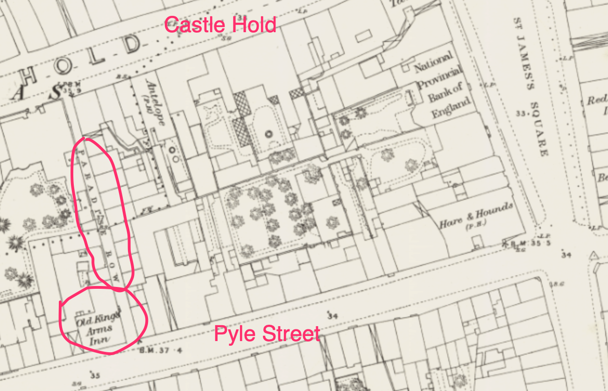

A Picture of Newport#
So what was life actually like in Newport at the time?
This is a work in progress. The content selected to date reflects the content/context of topics currently being researched and tales currently being developed.
If you go by the reports of the Borough Sessions, it seems to have been quite a lively place!
A colourful character, and, quite literally, an old offender — Repentance Adams#
A character that appears from the 1830s and into the 1850s, often around the winter time — Repentance Adams.
Two old offenders stealing turnips, December 1835
Hampshire Advertiser - Saturday 12 December 1835
At our Petty Sessions, on Saturday last, Repentance Adams, and Jane Wheeler, two old offenders, were sentenced to 14 days in the House of Correction, for stealing turnips from Falrlee.
Stealing a mat, December 1838
Hampshire Telegraph - Monday 10 December 1838
Repentance Adams, an old offender, was committetd to Winchester to take her trial, for stealing a mat from the door of Mr. Minns, dyer, at Newport.
Stealing a rush basket, December 1845
Hampshire Advertiser - Saturday 06 December 1845
A woman named Repentance Adams (an old offender, who some years ago created such a consternation by her numerous robberies of door-mats all over the town), was charged with stealing a new rush basket from the shop of Mrs. Mills, Town Gate. A woman named Inkstone, deposed to seeing her steal it; and Mr. Cooke, the borough policeman, stated he found it exposed for sale, shortly after she had stolen it, at the shop of Mr. Hale, grocer, Cobham-street, to whom, it appeared, she had just before disposed of it. She was committed to take her trial.
Stealing a basket, January 1846
Hampshire Advertiser - Saturday 17 January 1846
Repentance Adams, an old offender, was charged with stealing a basket, the property of Mrs. Mills, of Newport. Former indictments were put in, and she was sentenced to four months’ imprisonment and hard labour.
Vagrancy, January 1850
Hampshire Chronicle - Saturday 19 January 1850
Committed the County Gaol.—For vagrancy— Repentance Adams, 14 days.
Stealing a handkerchief and its contents, aged eighty, April 1858
Hampshire Advertiser - Saturday 17 April 1858
An old woman of eighty, named Repentance Adams, was charged with stealing a hand kerchief, containing tobacco, bacon, sugar, cakes, &c., the property of an inmate of the House of Industry, named James Harwood.
It appeared that the prosecutor was wending his way homeward with the bundle, and when at the bottom of Hunny Hill, he opened the wicket-gate of the cottage on the bridge, and placed his bundle under the hedge outside; went indoors to light his pipe, where be ttood gossiping a minute or two, and when he came out and looked for his bundle, it was gone. A young man working in the garden, named Windebank, swore that he saw the prisoner carry off a bundle, which he had no doubt was the one lost, although he was not then aware Harwood had just before thrown down the bundle which he saw the old woman pick up. It seems she must have had it under her shawl when Harwood spoke to her just after he left the cottage, as he passed her. Windebank had not then heard of his loss, and as soon as he did, they found out the old woman, who had, however, in the meantime, endeavonred to get rid of the spoil, somehow, and wanted to prove an alibi; but the evidence was too strong against her, and she contented herself by merely asserting she was not guilty, and was committed to Winchester Gaol for one month.
A License to Misbehave?#
At the annual licensing day in 1851, the Tontine Tap, whose license at the time appears to have been held by a certain Mr. John Hollywood, and the Valiant Soldier, also on Cosham-street, were both noted with disapproval by the magistrates for being hosts to prostitution. The Old King’s Arms on Pyle Street, was also similarly charged, although that particular characterisation was objected to.
“Tontine Tap” and “Valiant Soldier” called out, Licensing Day, 1851
Hampshire Advertiser - Saturday 30 August 1851
Borough of Newport Annual Licensing-day.— The Mayor and Abraham Clarke, esq. sat on Monday for granting licenses to public-houses. Most of the renewals passed without observation, but on Robert Dyer applying for a license for the Old King’s Arms, the Mayor made some strong observations on the general conduct and character or the house, stating that unless it was better conducted, the license would be refused next year. He said that observations had been made at the last meeting of the Town Council against the house, and the magistrates felt that they had a duty to perform to the public to prevent the annoyance to the neighbourhood, occasioned by bad and dissolute characters resorting to the house.

The applicant observed, that Mr. John Dyer had better put the saddle on himself, rather than accuse him, as his houses were the worst, being let to prostitutes.
Mr. John Dyer said he had given the parties notice to quit, and that he would see the notice enforced.
The Mayor said it was not a mere question whether prostitution was carried on in the house, for if bad characters were allowed to resort to them, and entice soldiers and others to accompany them, it was not observing the terms of the license.
Mr. Clarke observed that the words or the license were, that he should not allow idle and disorderly persons to assemble and meet together in his house. The magistrates had a duty to perform to the public, and they must enforce the law.
Mr. William Mew made some observations on the remarks made in the Town Council, and thought that the remarks made on the police, and on the Old King’s Arms, neither truthful or just.
The Mayor, in granting the licenses of the Valiant Soldier, and Tontine Tap, gave a similar caution to the applicants.
Similar admonitions respecting bad conduct, August 1851
Portsmouth Times and Naval Gazette - Saturday 30 August 1851
BOROUGH PETTY SESSIONS On Monday, before the Mayor, and Abraham Clarke, Esq.
This being the animal licensing day the court was crowded with persons interested.
On the application of Mr. Robert Dyer, of the old King’s Arms, the mayor addressed him on the complaint which had been made respecting the bad conduct of his house. At a meeting of the Council, remarks were made which the magistrates were bound to notice, and should the same course be pursued the license would be refused another year. Applicant said Mr. John Dyer had better put the saddle on himself than him, for his houses were let to bad characters and allowed nothing of the sort in his house. Mr. Dyer said he had given the parties notice to quit. Mr. W. Mew, as proprietor of the old King’s Arms, denied the statements made in the Council, and said the police had been most improperly charged with partiality in their conduct. Mr. Jenkins, of the White Hart, and Hollywood, of the Tontine Tap had similar admonitions.
The following year, Hollywood spoke out against one particular drunk and disorderly patron, who begged the clemency of the court on the understanding that she would leave the island forthwith.
Drunk and disorderly at the Tontine Tap, May, 1852
Portsmouth Times and Naval Gazette - Saturday 22 May 1852
Borough Petty Sessions, Monday.— Present, C. W. Estcourt, Esq., Mayor, E. Way, and R. M. Wavell, Esqs.
Ann Tayler was charged with being drunk and disorderly at the Tontine Tap on Sunday night. She was turned out of the house, but returned, when she was given into custody. John Hollywood gave evidence that the defendant came his house and drank with the soldiers, using very bad language, which he was determined not to allow. The defendant said was owing to her having had a little drink ; if the Court would forgive her, she would leave the Isle of Wight that day. The Mayor said it was not a very serious charge, and they would dismiss the case provided she would leave the Isle of Wight.
From a court report later that year regarding the theft of a pillow, it seems that Hollywood’s mother-in-law helped out at the Tontine Tap, and also that beds were available there.
Stealing and swindling, October 1853
Hampshire Independent - Saturday 23 October 1852
BOROUGH COURT. On Monday, in the Council Chamber, before the Mayor and Edward Way, Esq.
STEALING AND SWINDLING!
James Matthews, a waterman, belonging to Sea-view, near Ryde, was charged with the double offence of robbery, and obtaining money under false pretences.
Ellen Howes said she lived at the Fortune Tap [is this an *erratum*], in Corsham-street, and attended to the customers for her son in-law, John Hollywood, the landlord. The prisoner came there on Thursday evening, and engaged a bed. There were two pillows on it when he went to bed. After he had gone away in the morning a pillow was missing. It was the pillow now produced. It was brought to the house by the police, and was the property of John Hollywood.
Henry Rashleish, Jun., sworn: I am a carrier between Newport and Niton. On Fnday the prisoner came to me at the Duke of York with a brown paper parcel under his arm, and asked me if I was the Niton carrier, and if I knew the Sandrock hotel. I told him I went close to it. He then asked me if I knew James Beazley, who lived there as waiter. I said I did. He said he had a parcel for him which came from his sister, at Reading, and then was five shillings to pay on it. I him I required a bill, and he wrote on the cover “paid 5s. James Matthews.” It was directed to James Beazley, Sandrock Hotel, Niton. After he was gone I looked at the parcel, and by one end of it being broken I saw it was only a pillow, which I thought could be of no use to Beazley. I therefore communicated the fact to the police. I saw the prisoner afterwards at the Lamb Inn, and told him what I had discovered. He said he would give me the money again I was afraid. He then gave it to me back, but the Police said they should not let it drop, and went to find an owner for the pillow, knowing where he had slept that night. He said he had bought it in Quay Street, and that he gave sixpence for it.
P. C. Jacobs said he apprehended the prisoner at the Lamb under a charge of stealing the pillow, when the prisoner told him that he bought it for 6d., of a man in Quay Street.
Prisoner went into a long rigmarole story of his frequenting the Tontine out of respect to the landlord, with whom he had a glass of grog before he went to bed ; that he didn’t want for money, having seven or eight shillings in his pocket, and had, therefore, no reason to steal ; that he slept until ten o’clock, and then left seven or eight persons asleep in the same room! that he went towards the Quay, when a man asked 1s. 6d. for the pillow now produced, but he offered him sixpence, all the money he had, and promised him threepence more if he would come to the Lamb Inn, where he waited for an hour and a half, but he never came, and as he did’nt come, he thought he would send it to his brother-in-law, at Niton, and he had put down the five shillings on the cover because he should see him at Ryde shortly, where he was going to live, and then he knew he could make it all right with him.
Court : We have no doubt about the case, and we commit you to take your trial at the sessions.
A later report in the Hampshire Advertiser of Saturday 15 December 1855 suggests that Ellen Howes’ husband, perhaps, also had a role at the Tontine Tap?
Edward Howes, the landlord of the Tontine, a notorious house in Cosham-street, was charged with…
For stealing a pillow, three months’ imprisonment, Octoboer 1852
Hampshire Telegraph - Saturday 23 October 1852
James Matthews, for stealing a pillow, the property of John Hollywood, at Newport. Three months’ imprisonment.
As we shall see, this area of Cosham Street (now South Street), seems to have well established as one of the rather less than salubrious areas of Newport. In the following section, we shall see how The Tontine Tap and Tontine Yard had been receiving regular mentions in the local Borough Sessions reports through the 1840s at least, and continued to do so in the 1850s.
In 1853, the license of the Tontine was transferred to a Mr. Joseph Phillipps.
Transfer of license, April 1853
Isle of Wight Observer - Saturday 23 April 1853
Borough Sessions
Monday.—(Before Mr. F. Pittis, Esq., mayor; E. Way and R. M. Wavell, Esqs., magistrates.)
The license of the Tontine, public house, was transferred from Mr. John Hollywood to Mr. Joseph Phillipps.
Called as a witness in a case of burglary, we learn Joseph Phillips’ wife’s name (Mary) and also that food was available in the Tontine.
The wife of Joseph Phillips, 1854
Isle of Wight Observer - Saturday 11 February 1854
NEWPORT PETTY SESSIONS. Saturday.—(Before the Honble. W. aCourt Holmes and Sir H. P. Gordon, Bart.)
James Nobbs and Edward Woodford were charged with burglary.
…
Mary Philips: I am the wife of Joseph Philips, who keeps the “Tontine,” in Cosham-street, Newport. Mary Philips: I am the wife of Joseph Philips, who keeps the “Tontine,” in Cosham-street, Newport. On Sunday last, at dinner time, when we opened the house, Nobbs came in and asked me if he could have some dinner ? He had some, and gave me a sovereign to pay for it, and I gave him the change. …
At the licensing day of 1854, another establishment, the landlord of the “Race Horse”, was also cautioned for similar reasons.
Cautioned in consequence of complaints, August 1854
Isle of Wight Observer - Saturday 26 August 1854
BOROUGH SESSIONS
Monday.— Before F. Pittis, esq., mayor; E. Way, esq., R. M. Wavell, esq., and Thomas Cooke, esq., magistrates.
The applications for licenses for public-houses and billiards occupied the Bench for some considerable time; at the commencement of which, at the request of the Mayor, the clerk read the Act of Parliament relating to the closing all public-houses between the hours 12 Saturday night and 1 on Sunday afternoon, and half-past 2 in the afternoon and 6 in the evening, and 10 at night till 4 o’clock Monday morning, which came into operation on the 6th inst.
No license was taken away from any publican, though the landlord of the “Race Horse” was cautioned in consequence of complaints having been made that he kept a room for the use of the prostitutes of the town.
Warning
I can’t see the Race Horse named on the OS map? Another report mentions the “Race Horse passage”, just off the High-street.
The licensing day sessions also provided an opportunity for the magistrates to communicate any updates in licensing conditions. In 1855, this included the announcement that house could be kept “open on Sundays now from 12 1/2 till 3 and from 5 till 11”.
According to the New Act…, September, 1855
Isle of Wight Observer - Saturday 01 September 1855
Monday.—Before C. W. Estcourt, esq., mayor, R. M. Wavell, esq., and F. Pittis, esq., magistrates.
This being the annual licensing day for the Borough the Court was pretty full of innkeepers, but nothing particular transpired, except that the Mayor Informed them, that according to the New Act they could keep theft houses open on Sundays now from 12 1/2 till 3 and from 5 till 11.
But what are the new hours?! September 1855
Isle of Wight Observer - Saturday 01 September 1855
BOROUGH SESSIONS.
Before C. W. Estcourt, esq., mayor, R. M. Wavell, esq., and F. Pittis, esq., magistrates.
This being the annual licensing day for the Borough the Court was pretty full of innkeepers, but nothing particular transpired, except that the Mayor informed them, that according to the New Act they could keep their houses open on Sundays now from 12 till 3 and from 5 till 11.
The Tontine Tap#
In 1821, following the death of Mr. John Steane, merchant of Carisbrooke, the Tontine Tap, as well as its parent brewery and several tenements that presumably made up the lodgings around the Tontine Yard, was put up for sale, under an auction held by Mr. Francis Pittis.
To be sold by auciton, a capital free inn, July 1821
See also
The will of John Stearnes, merchant of Carisbrooke, is available from the National Archives: PROB 11/1635/302.
See also
Interestingly, “Tontine” is not mentioned on the Ordnamce Survey map a few years later.
Hampshire Chronicle - Monday 23 July 1821
A CAPITAL FREE INN,
With an excellent and well-constructed Brewery. Seven brick-built Tenements, a large garden, Stables, &c. &c.
TO be SOLD by AUCTION, by Mr. Francis Pittis, on the premises, on Tuesday 24th of July. 1821, by order and under the direction of the Executors of the late Mr. John Steane.— This Valuable PROPERTY will be put up in one lot, and if not sold in one lot, will be sold in the under-mentioned lots:—
In one lot will comprise,—All those capital Freehold and extensive Premises, called The TONTINE INN, situate in Pyle-street, nearly the centre of the town of Newport, with a Tap, extending into South-street; a well-construeted Brewery lately built upon the most approved plan. Seven brick-built TENEMENTS, with a large Garden, Stable, Piggery, and useful Out-buildings.
The situation of the above is very desirable, being in front of the Corn Market, where an extensive in- and out-door trade has been carried on for many years. Cellaring for 100 hogsheads of beer. The premises are in complete repair, and the whole of the Plant in the Brewery, Fixtures, and Furniture, may be taken at valuation, optional to the purchaser. Two-thirds of the purchase may remain on mortgage.
If divided, the License will with lot 2.
Lot I. All that Freehold DWELLING HOUSE which comprises, in front, a large room used as a liquor shop, a good front parlour, back ditto, large kitchen, wash-house, and pantry; on the floor, a very large dining-room and three best bed rooms ; four bed rooms on the third floor. A large courtyard, with the Brewery attached, in the best repair, with a walled Garden, 47 ft. by 52 ft., excellent four-stalled stable, piggery, and other offices.
Lot 2. All that good accustomed House, known by the name of the TONTINE TAP, in South-st. consisting of large tap room, bar, cellar, sitting room, and three good bed rooms ; with a right to a large yard, and convenient offices. An excellent supply of water.
Lot 3. A Freehold Tenement, fronting South-st. now in the occupation of Wm. Coombs.
Lot 4. A Freehold Tenement, of the same description, adjoining, in the occupation of Mr. Cogger.
Lot 5. Ditto, ditto, occupied by John King.
Lot 6. A brick-built Tenement, adjoining the Tap, occupied by ——— Kimber.
Lot 7. Ditto, adjoining Lot 6, in the occupation of ——— of Guy.
Lot 8. Ditto, of the same description, occupied by ——— Williams.
Lot 9. Ditto, ditto, occupied by ————.
[Several other public houses or former public houses were also for sale, presumbaly out of the same estate.]
Several years later, in 1842, and the premises of the Tontine Tap, licensed to a Mr. James Tansom, seems to have acquired a reputation as a disorderly house, even if it had not had such a reputation before.
The following report also includes a rather amusing description of a rooftop escape with an unfortunate climax…
A disorderly house of the worst description, June 1842
Hampshire Independent - Saturday 11 June 1842
BOROUGH COURT
James Tansom, landlord of the Fountain Tap [the following week, he was described as the landlord of the Tontine Tap], was charged with keeping a disorderly house of the worst description, and thereby creating great nuisance to the neighbours. Tansom declared himself “as innocent as a chick,” and that the disturbances which took place at his house was caused by parties who got drunk at other houses, and came to his to kick up a row. The Bench gave their opinion upon the point by levying a fine of 40s. and costs. The defendant, who is both near-sighted and deaf, declared he could not see why they had fined him (laughter).— We understood the charge to have arisen from the misconduct of a private in the St. Helens regiment, who was found there at a very late hour by the picquet, in company with a prostitute. The soldier attempted to escape by bolting through the garret window, cutting divers pranks along the tops of the houses, and amusing himself with pelting the picquet with bricks from the tops of the chimneys. An unfortunate caper, however, caused a slip in his step, and he was precipitated with great violence into the court yard below, receiving very great injury from alighting on the sharp edges of a water tub which chanced to oppose his progress towards his mother earth. He was immediately carried to the hospital.
Please take “these here things” into consideration, June 1842
Hampshire Independent - Saturday 18 June 1842
BOROUGH COURT— On Monday, before Mr. A. Clarke.— James Tansom, of the Tontine Tap, who was fined 40s. and costs on the previous Monday, for keeping a disorderly house, now stepped into the defendant’s box, and pointed out the hardship, injustice, and cruelty, of fining him, he being perfectly innocent according to his own showing. He said be thought it was a very hard case, for he had a sick wife, and scarcely any of the drunkenness was produced in his house; but people got drunk in other houses. and came to his house, and “knocked up a row.” Tansom said he had nothing but the public-house to look to for the support of three of them, himself, his wife, and the doctor (immense laughter); and, besides, he had never been brought before magistrates before from infancy to old age (laughter). As soon as he turned his back to draw a drop of beer, they began their rookery again, and he wished the Bench to take “these here things” into consideration.—The Bench said that it was most extraordinary that these rows, by people who get drunk elsewhere, should only occur in his house ; that women and soldiers should be found in his rooms day and night, on Sundays and workdays, and yet he know nothing at all of it. These things must be by his own comment, and the penalty they had inflicted was exceedingly moderate, for if he had had his due he would have been indicted at the sessions. They could not alter their previous decision.—Tansom: “ Then you must take me to prison, that’s all I have to say.”
At the start of 1843, the license was transferred to a Mr. Daniel Webb, whose name appears in association with the Tontine Tap several times over the next few years. The calibre of the place does not seem to have improved any.
Tontine licence transferred to Mr Webb, February, 1843
Hampshire Independent - Saturday 11 February 1843 https://www.britishnewspaperarchive.co.uk/viewer/bl/0002941/18430211/032/0003
Borough Court.—At this Court, on Monday, the licence of the Row Barge was transferred from Mr. James Riley to Mr. James Green; the Crown and Sceptre from Mr. H. Cooke to Mr. J. Riley; the Fountain from Mr. Jiffers to Mr. Wm. Lambrett; the Globe Inn to Mr. John Hallett, and the Tontine to Mr. Webb.
Theft of a decanter of rum, April, 1844
Hampshire Advertiser - Saturday 06 April 1844
Borough Court, Thursday.— A soldier, named Thomas Lyner, was remanded for further examination on Saturday next, charged with stealing a decanter, containing about a pint and a half of rum, from the bar of the Tontine public-house, occupied by Daniel Webb, South-street.
Stealing a decanter and a pint of run, April 1844
Hampshire Independent - Saturday 20 April 1844
County Quarter Sessions
Thomas Lynagh, a private in the 97th regiment, charged with stealing a decanter and a pint of rum from Daniel Webb, of the Tontine Tap.—Guilty: three months to hard labour.
A house of ill fame, June 1845
Hampshire Advertiser - Saturday 28 June 1845
Newport Borough Court.— Daniel Webb, landlord of the Tontine public-house, was brought up on Monday for further examination, charged with keeping a house of ill fame, also with encouraging drunkenness and gaming on his premise. The principal witnesses were William Coggen aod George Baker, parties who were living within a few yards of the defendant’s house. They entered into a description of the demoralizing scenes they had witnessed; and the Magistrates convicted him in the full penalty of 5l and 5s costs. –The defendant wa* allowed a week to pay the fine.
Depraved morals and indecency, 1845
Hampshire Independent - Saturday 20 September 1845
Borough Sessions
The case of the suspended licences next came on. Mr. James Green, of the Row Barge, who was charged with harbouring loose women in the house, having removed them, was permitted to resume his business.
William Farrow, of the Hope tavern, Pyle street, who stood charged with the same offense, wu further suspended, the police having deposed to a continuation of disorderly behaviour.
Daniel Webb, of the Tontine tap, was also suspended, in consequence of the depraved morals and indecency still carried on in the house —Mr. Wavell observed that he would not consent that this house (which is the property of the Mayor) should ever have another licence. as it had been a nuisance to the neighbourhood for years.—The Mayor’s son, who was present, acknowledged that the house had been very ill conducted, but as the landlord had been fined heavily for his offences, he thought that it had had the desired effect.—The Bench observed that they were in one sense the guardians of the morals of the town, and they considered that houses would be much better conducted if landlords were made aware that the licence would be taken away altogether if such practices were carried on. The magistrates themselves had seen the rows which were taking place every Sunday in that house. Mr. Mew’s argument that the landlord had been fined before, was of little avail, as his subsequent conduct proved.—License refused.
John Magee, landlord the Peckhome inn, soother resort for the abandoned and profligate of both sexes, also had his licence refused.
R. Jenkins, landlord of the White Hart inn, said he had taken a room or two opposite for the girls to sleep in, and the police said an alteration for the better had lately taken place in his house.—License suspended.
[We were glad to sse the Bench act with a proper spirit on this occasion, and we trust they will be properly supported by the inhabitants in their endeavors to silence these dens of infamy and immorality. We have seen much indecency and immorality amongst the labouring class who are known by the term “navies,” but we defy any person to compare their behaviour with the outrageous conduct of the military and the swarms of promotes who are allowed to congregate in these receptacles of vice, and to such an extent has it lately been practised, that no decent person having the wish to his family a good example, dare take them past these detestable places on their way to or from church or chapel on a Sunday.]
The suspension of his license appears to be not the only misfortune that Daniel Webb, “ a diminutive hatchet-faced man, apparently upwards of fifty years of age” suffered at the time.
Bigamy, October, 1845
Hampshire Advertiser - Saturday 18 October 1845
Southampton Police
WEDNESDAY.—(Before E. H. Hulton, P. C. Fall, P. Breton, and J. Bernard, esqs.)
Bigamy.— Daniel Webb, a diminutive hatchet-faced man, apparently upwards of fifty years of age, was placed at the bar under the following circumstance: — The complainant in the case was Margaret Leary, a stout, respectably-attired motherly-looking woman, of about forty-five years of age; with three children by a former marriage. She said the prisoner had married her five years ago, in the Isle of Wight, and she had lived comfortably with him till recently, when their harmony was disturbed by the visit of another lady, who claimed the prisoner as her husband, in virtue of priority of engagement. She had not the slightest fault to find with his conduct to her or her children, to whom he always behaved as kindly as if he had been their own father. She did not appear to wish to make any claim on the prisoner; her object being simply to prevent him from having claim any upon her, and she wished the Magistrates to compel him to “ sign his hand” to the effect that he would never come near her to trouble her again.
The Magistrates said they could not deal with the case, unless she wished to press the charge of bigamy; but as the prisoner had a wife already living, he could have no claim upon her. The complainant declined to press the charge, but gave the prisoner to understand that it was held in terrorem over his head, in case he ever annoyed her in future. The parties formerly had kept the Tontine Inn, at Newport, Isle of Wight. Webb said he had never seen nor heard tidings of his former wife for twelve years, till she unluckily made her appearance and caused this expose.
The licence of the Tontine Tap then made its way to a Mr. Charles Green, who appears to not to have taken too kindly to his patrons stealing his spirits, a certain Ann Gladdis appearing as a witness for the prosecution.
Stealing two bottles of spirits, May 1846
Hampshire Independent - Saturday 02 May 1846
BOROUGH COURT
On Monday last, before P. Scott, A. Clarke, and R. M. Wavell, Esqrs.
Henry Masom was charged by Charles Green, landlord of the Tontine Tap, with stealing 2 bottles containing spirits.
Prosecutor stated that, on Sunday night, the police came to his house shortly after 12 o’clock, and cleared the house. After they had left, he missed two bottles from the bar, containing rum and gin. Prisoner had been in the house all the evening, and was frequently in the bar. The bottle now produced with the rum in it was his property; he knew it by the crooked neck, and a mark on the cork, and had used it daily. The prisoner left the house when the police came in.
Bridget Tegg lives in New-street; saw prisoner at the Tontine last night; left altogether at shut-up time; when they got to the corner, prisoner pulled a bottle out of his pocket, and gave her, telling her to drink, and that it was gin. Witness refused; he then drank himself, and handed the bottle to Ann Gladdis, who refused to drink. A young man named Jacob Chessel, who was with witness, told her that Masom had stolen 2 bottles from the Tontine. Witness carried the bottle home with her, and prisoner threatened to kick the door in, if she would not deliver it up. Witness sent for the police, and prisoner ran away; she gave up the bottle to the police; it was the same now produced; it contained a small quartern of rum.
Ann Gladdis corroborated the above evidence.
P.C. Downer was called upon at half-past 12 o’clock to suppress a disturbance in New Street, at a Mr. Toogood’s, where the witness lodged, when he found the prisoner hid behind a tree. Tegg gave him a bottle with some rum in it, which she said prisoner gave her; he said he bought it at Cowes.
The prisoner was then remanded until Thursday.
The same Ann Gladdis, presumably, had also appeared as a witness in a case of the theft of two waistcoats and a pair of trowsers that had been prosecuted earlier that year.
An impudent request, January 1846
Hampshire Advertiser - Saturday 17 January 1846
ISLE OF WIGHT GENERAL QUARTER SESSIONS. These Sessions commenced on Wednesday last, before Wm. Thresher, esq.
On the bench were the Hon. A’Court Holmes, Sir Raymond Jervis, bart. Captain Swinburne, H. P. Gordon, J. B. Astley, J. Simeon, P. E. Turnbull, B. Mew, and A. Clarke, esqrs.
Wm. Miller and James Mounser, two privates of the 23rd Regt. were charged by Mr. Gaius Oliver, tailor, of the Corn Market, with stealing two waistcoats and a pair of trowsers, his property. He stated that about five o’clock in the evening of the 24th of October, he heard the shop-door open, but saw no one. He afterwards missed the articles in question.
A girl, named Ann Gladdis, stated that on the evening in question Miller asked her if she would sell some recruits’ clothes which he had. Mounser afterwards brought her the bundle.
Mr. Grapes deposed to finding the bundle at their lodgings in Pyle-street. Miller made a long defence, to the effect that when he was blackberrying he “ picked up” the bundle. Mounser simply said the clothes was given him by Miller to give to Giaddis. Their defence had the desired effect, and the jury returned a verdict of Not Guilty. They then had the impudence to demand the clothes, which request, of course, was not acceded to.
Despite prosecuting his clientele, it seems the new licensee was unable to do much to change the by now established reputation of the house.
Keeping a disorderly house, January 1848
Hampshire Independent - Saturday 08 January 1848
BOROUGH COURT. On Monday last, before the Mayor, Abraham Clarke, Esq., and Percy Scott, Esq.
…
Charles Green, landlord of the Tontine tap, was charged with keeping a disorderly house.
Richard Cogger, lace maker, said he lived in Cosham-street. Defendant kept the Tontine tap close by. On Sunday evening, about six o’clock, there was a great noise with the soldiers around the house, both front and back. The conduct of the house at all times was most disgraceful. The house itself was a disgrace to any civilised country. There was nothing going on there but continual drunkenness. Soldiers and common prostitutes were harboured there, and there was continual rows and disorders. The most awful language and imprecations were in constant use, which it was very shocking to hear. The inhabitants around could not open their doors without their ears being insulted; even the house in itself as a house was unfit fur public purposes, there being no back door or convenience to it, and the soldiers and the girls came either into the street and exposed themselves or went into the yard, which was common to many other houses. He believed the girls lodged in the house, they were there every day, and drunk every day. He had complained to the magistrates, and to the brewer (Mr. Mew), and as it still kept going on, he thought it time something should be done.
Defendant : You say I harbour common prostitutes in my house, can you prove I lodge any there?
Complainant : I only know they are there, I don’t know if you lodge them. I don’t go into your house to ascertain that.
Harriet Cogger fully confirmed the testimony of her husband.
Inspector Grapes said he knew the house in question. There were constant complaints of the house. Six or seven prostitutes were generally there at a time. Had never found any in the bed rooms. There was dancing and fiddling going on there every night, the same as in four or five others of the same class. Defendant’s wife was wholly unfit for the house. Defendant had been to him at least twenty times himself to come over to keep her quiet when she was drunk. Such a house must be a nuisance to the neighbourhood or any house of that description. They paid proper attention to hours.
Defendant said there were two drinking rooms in the house and three bed rooms, no back yard or back door. The soldiers kicked up the row and went outside. He had done his best to keep them quiet. Had been a soldier himself. Was now receiving a pension.
Mr. Clarke.: If you strive to keep your house quiet and cannot, it shows you are unfit to keep it at all.
Mayor: We have proof of very great mismanagement here, and one allegation of suffering drunkenness is sufficiently proved also. There is clear proof that you have offended against two of the principal points of your license. The first, your allowing disorderly conduct, and the second, your permitting bad characters to assemble and meet together therein. Now it is our duty to put down houses as yours as far as we can, and if any house in the town is proved to be a disgrace and a nuisance, and a moral pest to the inhabitants, yours is that house. We do not wish to press upon you too hard, but we hope you will take warning and mit offend again. So long as we occupy this place, and our attention is directed to disorderly houses, we shall feel it to be our duty to put them down, and we owe our thanks to those who will come forward to expose them. At present we shall only fine you £1 and 5s. costs, and we hope you will pay attention to your license.
Although no longer the licensee of the Tontine Tap, it seems as if James Tansom was still living in Tontine yard.
Sufficient to breed a pestilence, November 1848
Hampshire Independent - Saturday 25 November 1848
BOROUGH SESSIONS
On Monday last, before the Mayor (James Eldridge, Esq.), Abraham Clarke and P. Scott, Esqrs.
James Tansom was charged with having his dwelling house situate in the Tontine yard (part of whoch he lets out in lodgings to travellers), in a most filthy and unwholesome condition, prejudicial both to the inmates and the neighbourhood.
The Inspector gave evidence of the state of the place, which, in itself, was quite sufficient to breed a pestilence, and stated that he had given the defendant due notice to clean it. He had since visited it, and found it in the same condition.
The Mayor: Both unwholesome and offensive. If your house is not cleaned and whitewashed within twenty-four hours, we shall order it to be done, and levy a distress on your goods to pay the expenses; and we subject you to a fine of 10s per day until it is done.
But it was not just the Tontine Tap where disorder could be found.
Drunk and disorderly in the Tontine Yard, February 1851
Hampshire Advertiser - Saturday 08 February 1851
Borough Court.— Before the Mayor, (Edward Way, esq.), and A. Clarke, esq.
Benjamin Breaks was cbarged by P.C. Hobbs with being drunk and disorderly, on Saturday night, in the Tontine yard. Witness deposed that the defendant was drunk and making a great noise, and that when turned out of the public-houses, he often got persons to go into his own. The defendant denied the cbarge, but Mr. Grapes, Inspector of Police, corroborated Hobbs’ evidence.— The defendant, in answer to the Bench, said be only earnt 8s a week. Fined 5s and 5s costs, and allowed a fortnight to pay it.
Several years later, the Tontine area still seemed to have a reputation where “things happened”.
“Take care or I’ll give you more”, February 1858
Isle of Wight Mercury - Saturday 20 February 1858
BOROUGH PETTY SESSIONS. February 15th. Before the Worshipful the Mayor (in the chair), and E. Way, Esq.
M. WOODMORE v. W. GUMMON, 6th Regt.
Mary Woodmore, sworn— I am a single woman. I live in Scarrets-lane. Last Wednesday morning between 10 and 11 o’clock, I was at home in bed. I heard some one breaking open shutters. I got out of bed and looked out of the window, and saw it was the defendant. I asked what he wanted. He said he wanted to come in. I told him to go away. Between 11 and 12 on the same morning of the same day, I was in the Tontine Inn, Defendant came in and asked Eliza West who was there and who lives with me, and what she said. She said that we did not want him up there. He then struck her with his open hand in the face. I asked him why he did it. He then up with his fist and gave me a black eye. He afterwards said, “take care or I’ll give you more.” He would have struck me again but he was prevented by Corporal Cox.
Cross-examined— Defendant did strike me, and tore my hat off my head.
John Chick, sworn— I live in Scarrot’s-lane, and I was at the Tontine last Wednesday evening before defendant came in. He asked Eliza West what she had been saying about him, and struck her. Many Woodmore asked what he did it for. He immediately struck her, and gave her a black eye. He struck her twice. I am sure she had not a black eye before defendant struck her, but afterwards the eye was swollen.
Cross-examined— I do not live in the same house as the complainant. I have lived in the same house, but that was in another house. My mother takes the house in which Mary Woodmore lives.
Eliza West corroborated the above evidence.
Police-constable, W. H. Stubbs, sworn— I was sent for about 1 last Thursday morning to Scarrot’s-lane. I met defendant on the road. He went back to complainants house with me. The girls were in bed. Woodmore complained of his abusing her and breaking the windows, and I took him into custody. Woodmore had a black eye.
Defence— I saw the girls crying, and asked them what they had been saying about me. I put one outside the door. I did not strike the complainant or either of the girls, Rosa Cribb gave complainant the black eye.
Convicted in the penalty 10s., and 5s. costs, or committed to the House of Correction for 21 days. The money was paid.
Hawker charged with indecent exposure, June 1858
Hampshire Advertiser - Saturday 05 June 1858
BOROUGH COURT. Monday.— Magistrates present: The Mayor, R. M. Wavell, and E. Way, esqrs.
On Thursday, a hawker, named William Waterworth, was committed to the House of Correction at Winchester for one month, as a rogue and vagabond, for being drunk at the Tontine Tap, and indecent exposure.
The Crab and Lobster#
Another frequently mentioned establishment, most notably for the landlord’s rather cavalier attitude to keeping to the licensed opening hours, was the Crab and Lobster on Deadman’s Lane, now known as Trafalgar Road, that goes out of Newport from Nodehill to connect with Carisbrooke Road.
“Somebody in de house”, October. 1854
Hampshire Advertiser - Saturday 07 October 1854
Isle of Wight Petty Sessions
Borough Court
Monday.— Magistrates present: The Mayor (F. Pittis, esq.), Edward Way, esq. and Dr. Wavell.
…
“SOMEBODY IN DE HOUSE.”
Joseph Anderson was charged with keeping the Crab and Lobster, in Deadman’s-lane, open after ten o’clock on Sunday night, the 24th of September.
Police-constable Lockhart said that on Sunday, the 24th of September, at twenty minutes to eleven at night, he knocked at defendant’s house. After some time defendant came to the door. Witness asked who he had in the house? He said no one, and that he would not do anything against the law “ for ever so.” Witness then went into the yard and let another policeman come in at the back door. They found a man in the closet, and in searching the house found two men in the cupboard, and two also in the coal hole in the back room. There were cups on the sideboard that had been used for beer, also a quart cup and a glass half full of beer in another room.
Defendant said there had been no beer drank after ten minutes to ten. One man was a lodger.
Fined 20s and 5s costs, or fourteen days’ imprisonment.
Open at 10pm on a Sunday night, October 1854
Isle of Wight Observer - Saturday 07 October 1854
BOROUGH SESSIONS. Mayor F. Pittis, esq. (mayor), and Edw. Way, esq.
Joseph Anderson, of the Crab and Lobster publichouse, was charged with keeping his house open for the sale of beer after 10 o’clock on Sunday night, the 24th ult.
P.C. Lockhart said— I went to the defendant’s house in company with P.C. Cave at twenty minutes to 11 on the night in question and heard persons in the house. I stopped at the front door and Cave went to the back door. Cave knocked at the back door and some one asked who it was, and he said, the police. The person did not open the door but went back again into the house. I heard a scuffle in the house afterwards. I rapped several times at the front door, and I heard the defendant say to a boy inside, Why don’t you open the door or go and see who it is. A female made reply and said, you know who it is, it is the police. The defendant then came to the door and asked who it was. I told him, the police. He opened the door, and I asked him who he had in his house. He said, no one. I told him he had for I heard them. He again said he had no one; he would not do anything against the law if he knew it, for ever so. I went to the back door and let Cave in. We searched the house and found two men in a cupboard in the back room, two in the coal hole and in the yard, one the water closet. There were cups the sideboard that had been used for beer, and there was a quart cup and a glass half-full of beer in the other room. I told him I must report him. He said he hoped I should not.
In defence, Anderson said no beer had been drawn since ten minutes before 10 o’clock; but, of course, such an excuse would not satisfy the magistrates, and they fined him 20s. and 5s. costs.
Knock-knock, who’s there? No-one. Ocotober, 1854
Isle of Wight Observer - Saturday 07 October 1854
Joseph Anderson, of the Crab and Lobster publichouse, was charged with keeping his house open for the sale of beer after 10 o’clock on Sunday night, the 24th ult.
P.C. Lockhart said—I went to the defendant’s house in company with P.C. Cave at twenty minutes to 11 on the night in question and heard persons in the house. I stopped at the front door and Cave went to the back door. Cave knocked at the back door and some one asked who it was, and he said, the police. The person did not open the door but went back again into the house. I heard a scuffle in the house afterwards. I rapped several times at the front door, and I heard the defendant say to a boy inside, Why don’t you open the door or go and see who it is. A female made reply and said, you know who it is, it is the police. The defendant then came to the door and asked who it was. I told him, the police. He opened the door, and I asked him who he had in his house. He said, no one. I told him he had for I heard them. He again said he had no one; he would not do anything against the law if he knew it, for ever so. I went to the back door and let Cave in. We searched the house and found two men in a cupboard in the back room, two in the coal hole and in the yard, one the water closet. There were cups on the sideboard that had been used for beer, and there was a quart cup and a glass half-full of beer in the other room. I told him I must report him. He said he hoped I should not.
In defence, Anderson said no beer had been drawn since ten minutes before 10 o’clock; but, of course, such an excuse would not satisfy the magistrates, and they fined him 20s. and 5s. costs.
In the March of the next year, Joseph Anderson, landlord of the Crab and Lobster was back before the bench again.
In search of absent soldiers, March 1855
Isle of Wight Observer - Saturday 10 March 1855
BOROUGH SESSIONS.
Monday.— Before C. W. Estcourt, Esq., mayor; and E. Way, Esq.
Joseph Anderson, of the “ Crab and Lobster” beer shop, was charged with keeping his house open for the sale of beer after the time allowed by law, and secreting soldiers at such times.
P.C. Cave, said — I went to defendant’s house about half-past 11 o’clock on Monday night, the 19th of February, with the picket, in search of absent soldiers. I was admitted, and defendant’s wife said no soldiers were there. Defendant was present. I went to the coal hole door and found it tied inside. I broke the string, and found a soldier concealed in the corner of the coal hole. I asked defendant and his wife if they had any more in the house, and they said, no. I then went up stairs and found two girls sitting by the fire, and two soldiers lying under the bed.
P.C. Hobbs, said—I went to the defendant’s house with the picket, on the night of the 19th of February, at about half-past 10 o’clock, and found three soldiers in the kitchen. The picket took them away, and when they got to Nodehill they escaped from the picket. I went back to the house about half-past 11 o’clock with the last witness. P.C. Cave asked if there were absent soldiers there, and Mrs. Anderson denied that there were. We found one soldier tied in the coal hole, and two up stairs. They were the same three soldiers who had been taken from the house. On Sunday last, about 12 o’clock at night, I went to defendant’s house, and saw a soldier in the kitchen. I asked the defendant’s wife if there were any more. She said, no. I then went up stairs and found soldier bed with a common prostitute. There were two other prostitutes on the second floor, and two men with them. I believe one of the women was a lodger, but not the other women nor the men. I then came down stairs, and Mrs. Anderson let another soldier out of the back door. There are great complaints of the house from the neighbours.
The defendant was fined £2, and 5s. costs, and in default of payment committed to the house of correction for a month.
After hours beer and secreting soldiers, March 1855
Isle of Wight Observer - Saturday 10 March 1855
BOROUGH SESSIONS.
Monday.— Before C. W. Estcourt, Esq., mayor; and E. Way, Esq.
Joseph Anderson, of the “ Crab and Lobster” beer shop, was charged with keeping his house open for the sale of beer after the time allowed by law, and secreting soldiers at such times.
P.C. Cave, said — I went to defendant’s house about half-past 11 o’clock on Monday night, the 19th of February, with the picket, in search of absent soldiers. I was admitted, and defendant’s wife said no soldiers were there. Defendant was present. I went to the coal hole door and found it tied inside. I broke the string, and found a soldier concealed in the corner of the coal hole. I asked defendant and his wife if they had any more in the house, and they said, no. I then went up stairs and found two girls sitting by the fire, and two soldiers lying under the bed.
P.C. Hobbs, said—I went to the defendant’s house with the picket, on the night of the 19th of February, at about half-past 10 o’clock, and found three soldiers in the kitchen. The picket took them away, and when they got to Nodehill they escaped from the picket. I went back to the house about half-past 11 o’clock with the last witness. P.C. Cave asked if there were absent soldiers there, and Mrs. Anderson denied that there were. We found one soldier tied in the coal hole, and two up stairs. They were the same three soldiers who had been taken from the house. On Sunday last, about 12 o’clock at night, I went to defendant’s house, and saw a soldier in the kitchen. I asked the defendant’s wife if there were any more. She said, no. I then went up stairs and found soldier bed with a common prostitute. There were two other prostitutes on the second floor, and two men with them. I believe one of the women was a lodger, but not the other women nor the men. I then came down stairs, and Mrs. Anderson let another soldier out of the back door. There are great complaints of the house from the neighbours.
The defendant was fined £2, and 5s. costs, and in default of payment committed to the house of correction for a month.
A couple of months later, in May, he was back again for a third time, at least, after a rather large party seems to have been interrupted.
Sale of beer, at hours not allowed, May 1855
Isle of Wight Observer - Saturday 26 May 1855
BOROUGH SESSIONS
Monday.—Before C. W. Estcourt, Esq., Mayor ; and Dr. Wavell.
…
Joseph Anderson was charged with keeping his house (the Crab and Lobster beer shop, Deadman’s-lane) open for the sale of beer on Sunday, the 13th inst., and on Tuesday night last, for the sale of beer at hours not allowed by the law, and for keeping very disorderly house. It having been proved by Mr. Grapes, inspector of police, that the defendant had been twice committed in this court for similar offences, he was fined and 7s. 6d. costs, and default of payment to be committed to the House of Correction, at Winchester, for a month, and to be disqualified from selling beer by retail for the space of two years next ensuing this conviction.
Soldiers and prostitutes, May 1855
Hampshire Advertiser - Saturday 26 May 1855
NEWPORT
BOROUGH COURT
BOROUGH COURT. Monday.— Magistrates present : The Mayor (C. W. Estcourt), and R. M. Wavell. esqrs.
“Othello’s Occupation Gone.”— Joseph Anderson, the notorious occupier of the Crab and Lobster beer-shop (who is just out of Winchester Gaol), was again summoned, for “ not being able to keep magistrates’ hours,” as he terms it.
Police-constable Hobbs stated that last Sunday week he went to the house of the defendant, at three o’clock in the afternoon, and found the front door open. There were between forty and fifty soldiers in the house, and some prostitutes; they were sitting about drinking beer. He went there with a piquet the other night, and they found six girls in bed.
Police constable Stubbs deposed that last Tuesday night, at half-past eleven, he caught about eight couple of men and women there. There were beer-cups on the table, and they were sitting down, listening to defendant singing, “John Anderson my Joe John.” Stubbs remonstrated with him, and he merely remarked, that would make another charge against him.
Police-constable Cave proved the service of the summons. The man was not there, and his wife would not take it. She said her husband should not appear. He read the summons over, and put it down in the passage ; he then left. She ran after him, and told him he might light his pipe with it, &c., throwing the summons after him.
Mr. Inspector Grapes recited several cases of previous convictions. He was called in Court, but no one answered, and the Mayor then adjudged the defendant to be fined £20, the license of the house to be cancelled, and himself to be disqualified for selling beer for two years. In default of payment of the fine, to be committed to Winchester Gaol for two months.
Open after legal hours, May 1855
Hampshire Telegraph - Saturday 26 May 1855
Isle of Wight — Saturday May 26. — Newport
At the Borough Petty Sessions on Monday, before the Mayor and Dr. Wavell—
…
Joseph Anderson, of the Crab and Lobster, beer-shop, was charged with keeping his house open after legal hours, and with conducting it in a disreputable manner; he was fined 20l., or one month’s imprisonment, and the license to be suspended.
The Adventures of August Jager#
Another name that crops up a few of times is August Jager, the German keeper of the Prince Albert, also on Deadman’s Lane.
Lewd and disorderly conduct, August 1855
Portsmouth Times and Naval Gazette - Saturday 04 August 1855
Newport
Borough Police Court, Thursday, before R. M. Wavell and Francis Pittis, Esq.
August Jager, keeper of the “ Prince Albert,” beer shop, was convicted of allowing lewd and disorderly conduct in his house. The evidence disclosed scenes of profligacy and depravity rarely brought before a public court. Fined £5, to be levied by distress, and in default one month’s imprisonment.
For the purpose of prostitution, August 1855
Isle of Wight Observer - Saturday 04 August 1855
NEWPORT
…
BOROUGH SESSIONS
Thursday, before R. M. Wavell, esq., and F. Pittis, esq., magistrates.
August Jager-, beerhouse keeper, was summoned for keeping persons of disorderly character for the purpose of prostitution in his house.
Fined £5 and 7s. 6d. costs, and in default of payment in 7 days amount to be levied distress, and in default of distress to be committed to the House of Correction at Winchester for one calendar mouth.
From another report, we get the sense that running such a disorderly house was not necessarily a full-time occupation, as well as some hint of the character of Rosa Jager, August Jager’s wife.
A colourful argument? May, 1855
Isle of Wight Observer - Saturday 19 May 1855
BOROUGH SESSIONS. Monday.—Before C. W. Estcourt, Esq., mayor ; E. Way, and W. M. Wavell, Esqrs.
Joseph Rands, shoemaker, was summoned by Rosa Jager for using profane and obscene language to her.
Mr. Beckingsale appeared for the defendant, and contended that the magistrates had no jurisdiction in the matter; for, even admitting that the language complained of had been used, it was in the defendant’s own house, and neither the Act or the By-Law authorised them to interfere with any man for making use of such language in his own house.
The magistrates did not agree with Mr. Beckingsale that his arguments applied to the present case, as it occurred in the front shop, which was a public place, and it was not a private quarrel in the family.
The complainant then said—I am the wife of August Jager, a German. My husband works for Mr. Rands. Last Thursday week I took some work home to Mr. Rands’ shop, and went in three times for the money. He said he had no change and could not pay me, and abused me. I told him my husband wanted the money.
Cross-examined by Mr. Beckingsale—I work with my husband at the trade. We have been making slippers for Mr. Rands. He only paid 6d. for making a pair of slippers. [Mr. Rands : I give them 3s. a dozen more than they get in London.] He did complain to them about a pair being made bad, but how could he expect them made better for sixpence ? He did not say he would not pay me till I got him the last my husband had that belonged to him. He said he had no change.
George Frederick Mills, a little boy, was then called by Mr. Beckingsale and stated that he was in the shop all three times when the complainant was there, and that Mr. Rands did not make use of any such language that mentioned the complainant. The case was then dismissed.
Eighteen months later, it seems that Rosa may have been somewhat less than faithful to her husband, who seems not to have been too welcoming when she attempted to go back to him.
A black eye, and kicked out into the street, July 1857
Hampshire Advertiser - Saturday 18 July 1857
BOROUGH COURT. Monday.— Magistrates present, the Mayor, and R. M. Wavell, and E. Way. esqrs.
Mrs. Rosa Jager complained of her husband, August Jager, ill treating her, and turning her out of his house. He is the keeper of the notorious beer-shop Prince Albert, in Deadman’s-lane and it appeared that his wife started off with another man about five months ago, and had lately returned, and wanted again to “walk into the defendant’s affections,” which he reciprocated, on her returning to his house, by giving her a black eye, and kicking her into the street. The case was dismissed.
Disorderly neighbourhoods#
As well as regular mentions in the court reports for particular establishments, certain locations were also associated with disorderly behaviour. Tontine Yard was onesuch, as well as the environs of Cosham-street in general, Paradise Row another.
Note
Paradise Row was located between Castle Hold and Pyle Street, opposite waw used to be the Post Office, with the Old King’s Arms Inn on the corner of Paradise Row and Pyle Street.
Living in such a place appears not to have been without its hazards, as the following rather amusing incident demonstrates:
Sleeping in the wrong house? June 1855
Hampshire Advertiser - Saturday 30 June 1855
BOROUGH COURT. MONDAY.-Magistrates present : E. Way, R. M. Wavell. and F. Pittis, esqrs.
… William Hinds was charged with being unlawfully in the house of Joseph Guttridge, of Cosham-street. He said he felt something pressing on his chest, which awoke him in a fright, and he saw a man by his bed-side. He shouted “ Holoa,” and the stranger muttered something, but he could not tell what. He jumped out of bed, and rushed down stairs, intending to get a light, when he ran out and brought in a policeman, who found the man still in his bed-room. He appeared to be somewhat intoxicated. Complainant’s door was not locked.
Police-constable William Lockhart deposed to complainant’s running up to him with only his shirt on, and could hardly speak for fright. He said a man had got into his house. Witness went with him, when he found the defendant lying on the floor. He refused to go out, and witness pulled him out, when he began violently kicking. He was a militia man, and had taken his cap, coat, and belt off, and also placed a chair and table before the front door. In defence, the defendant said, “ I had no intention of going to the house to do any harm. I had some drink, and did not know what I did.”— He was fined 10s, and 5s costs.
And the following provides a good example of some of the verbal slapstick that could be found in certain Borough Court cases, as well as a clue to the soundscape of Paradise Row.
A dashing young Cyprian of Paradise Row, June 1846
Hampshire Independent - Saturday 27 June 1846
BOROUGH COURT. On Monday last, before Mr. B. Mew, Esq., Mayor, T. Cooke and Abraham Clarke, Esqrs.
The next was a dashing young Cyprian, answering to the name of Eliza Brading, who has lately been exhibiting in this town under distinguished patronage. She was charged under the head of disorderlies and
P.C. Cooke being examined, said that on Sunday morning about a quarter to two, he heard “sitch a row” in Paradise (?) Row; he went there, and there he found the prisoner at her father’s house, who lives in the Row, and who figured as the loudest orator in the row. She had hold of the street door, and swore her father should not come out, nor should the witness come in. The quarrel was so loud and so violent that all the neighbours were roused from their sleep; at last her father came out, by breaking the front door all to bits, with one of which he commenced thrashing the witness, who took him prisoner. The gentle damsel, seeing her father in durance vile, changed her tactics, and from abusing her father commenced an attack on the police, bringing her teeth, finger nails, and tongue to aid in the rescue, and it was with some difficulty that they could defend themselves from her spirited attack, and then only by relinquishing their hold of the first prisoner.
Inspector Grapes deposed that Miss Brading was disturbing the whole neighbourbood by her quarrels on Sunday morning with father and mother; and the language of the whole was most abominable. He told her as the time if she was not quiet he should lock her up, when she went away, using a most vulgar expression. He sent some of his men who were ordered to take her up if she persevered in such conduct, and they brought her to the station-house in about half an hour afterwards. She was very tipsy, and is a reputed common prostitue and street walker. (Miss B. raised both her hands and voice against this attack on her chastity, and defied the Inspector to prove his words.)
Inspector Why your own father was accusing you of being a soldier’s ————, and you were retorting on him that you paid the rent of the house and kept the rest of the family.
Prisoner : You never saw me with any soldiers.
Inspector: But I have with the officers, and arn’t they soldiers?
Prisoner: Ah! you’d swear anything.
Inspector: After we got her into the station-house, she swore she would tell the Court that I wanted to come in with her ; the house where she lives is a complete nuisance to the town.
Prisoner said in her defence that the policemen knocked her father down three times in the gutter, and when she interfered to protect him they struck her twice across the back, and that the Inspector would even give her a drop of cold water in the station-house to cool her parched lips.
The Court: There is no doubt but you are a great nuisance to the neighbourhood where you live, and it is our duty to put down such places; at any rate we shall stop your career for a little time at least, by committing you to bridewell for one month.
The dashing nymph looked extremely disconcerted at this announcement, as the ready purse was at hand to have defrayed any fine that might have been inflicted. No protestations however were of any avail with this inflexible Bench, and her ladyship, not having learnt latin, could not decline quod!
James Brading, the father, a mason, was then charged with assaulting the police, and being guilty of disorderly conduct: and the evidence was to the same effect as that given against his daughter.
Prisoner, to the Inspector : Did you ever find the money I lost out my pocket in the gutter that night? You said when you came back you’d see about it.
Inspector: I never heard a word of any money you had or lost until this moment; you had only your trousers on; you did say you would tell the Magistrates where I sold the bad money. I have had you up before for bad conduct.
Defendant professed to be particulalry shocked at the Inspector’s falsehood, but an inspection of the black book showed the truth of the assertion.
P.C. Hasler deposed to the outrageous conduct of the prisoner, and said he heard nothing before of his losing any money, but prisoner did say on being had to the station-house that he would tell the Court where Grapes had sold the £10 worth of bad money (laughter).
Fined 15s.
The prisoner wanted to exhibit his bruises, and said the usage he had received was worth 10 shillings and more too; full credit, however, was given to his word in this case, and a promise that an imprisonment for ten days only would be an equivalent to the debt, which we believe the young ladypaid for him before the Court adjourned.
The following report adds a little more colour to the case:
Biting a policeman unmercifully, June 1846
Hampshire Advertiser - Saturday 27 June 1846
Newport Borough Court.— On Monday— (Before the Mayor and Thomas Cooke and A. Clarke, esqrs.)
A girl, named Eliza Brading, and her father, J. Brading, both of them notorious characters, were charged with being riotous and assaulting the policemen, in the middle of the night.
From the evidence, it appeared that Cooke and Wooldridge heard a great noise in Brading’s house, in Paradise Row, about two o’clock on Sunday morning; the two defendants appeared to be abusing and striking each other. While some were standing there the girl ran out of the house and fastened the door. Brading directly afterwards broke the pannels of the door through, and came into the lane, when they endeavoured to take him, and whilst doing so the daughter scratched and bit them unmercifully.
The man was fined 15s, including costs, which he paid; and the girl was committed to the Bridewell for a month.
Another example of someone perhaps forcing their way into a house makes us wonder “why that house?”
A disturbance in Paradise Row, December 1848
Hampshire Advertiser - Saturday 16 December 1848
Borough Court, Saturday.— (Before the Mayor.) Richard Shepherd, and a young man named Cooke, were charged with having, between eleven and twelve the previous night, created a disturbance in Paradise Row, by breaking the door of one Jane Blow’s house. The defendants were fined 7s 6d each, and to pay costs, or in default, fourteen days’ imprisonment.
But from reports otherwhen, we maybe start to be able to join the dots…
Keeping a disorderly house in Paradise Row, November 1849
Hampshire Independent - Saturday 24 November 1849
BOROUGH COURT. On Monday last, before the Mayor (E. Way, Esq.), A. Clarke and R. M. Wavell, Esqrs.
BIRDS OF PARADISE
Jane Blow was charged by the Inspector of Police with keeping a disorderly house, for the purposes of prostitution, in Paradise Row.
Mr. Grapes deposed that he had found 10 or 12 people in the house drinking beer, which they had previously laid in a stock of, at 2 o’clock in the morning, and it was impossible to keep the town quiet under such circumstances. The defendant encouraged her two daughters to open prostitution in the same house, and lived on the profits.
Defendant was liberated on her own recognisance to appear at the Sessions.
Drunk and/or disorderly#
Reports in the weekly local press of the time regularly included general mentions of disorderly conduct, including drunkenness, swearing, and prostitution, as well as domestic incidents.
Repaying a beating, with interest, June 1846
Hampshire Advertiser - Saturday 27 June 1846
Newport Borough Court.— On Monday— (Before the Mayor and Thomas Cooke and A. Clarke, esqrs.)
A girl, named Eliza Young, complained against a woman of the name of James, living in Cosham-street, or assaulting her on Saturday evening last.
It appeared that the husband of defendant had been beating a younger sister of complainant, and Eliza was just in the act of repaying him, with interest, when at that moment in popped Mrs. James, and checked her with a couple of back-handed blows across the face.
Complainant said sbe wished then to “ take the pair,” and they would have settled it without bringing the case here: but her friend would not let her.
The magistrateds bound Mrs. James over to keep the peace for a twelevemonth.
Perhaps the same Eliza Young was also involved in another incident a couple of years later:
Ill-using a wife, March 1848
Hampshire Advertiser - Saturday 18 March 1848
Borough Court.— On Monday, (before J. Eldridge, esq. Mayor, and other gentlemen.)
James Payne, a sailor, living in Orchard-street, was charged by his wife Eiza . with ill-using her, on the previous evening. She said that she went round to Mrs. Young’s, in Scarrott’s-lane, on Sunday, and about half-past ten at night her husband came there, knocked her about and drove her out of the house. He then took her bonnet and shawl, and went on home with it. She followed him, but he locked the door, fastened the windows, and said she should not come in that night. After much persuasion he let her in ; they then began quarrelling, and he took a hammer and poker and commenced breaking the crockery and everything in the house he came across. He then began beating her about, and struck her violently with the poker, saying he would make short work of it. She then cried “ Murder !” and the police broke open the door, and took him to the station-house.
Eliza Young stated that the complainant merely came to her hoause for the purpose of asking her to accompany her to the Quay, to see if ber husband was gone down the river.
The defendant, in his defence, said he caught both of them with soldiers in the house, and she was always out somewhere “cata-walling.” He was bound over to keep the peace for a twelve-month.
Reports of drunken and disorderly behaviour were even more commonplace.
An old offender, drunk and disorderly, March 1851
Hampshire Advertiser - Saturday 22 March 1851
Borough Court.— On Monday, before the Mayor, and R. M. Wavell, esq.
William Young, an old offender, was convicted on the evidence of P.C. Jacobs, John Hollywood, and P.C. Hobbs, of having been drunk and disorderly, at the Tontine, Cosham-street, on Saturday night, and was fined 5s and 5s costs, with one week allowed for payment.
Drunk and loitering, September 1853
Isle of Wight Observer - Saturday 10 September 1853
BOROUGH SESSION’S. Monday.—(Before F. Pittis, Esq., mayor; C. W. Estcourt, Esq., R. M. Wavell, Esq., and Thos. Cooke, Esq., magistrates.)
Mary Harvey, common prostitute, was charged by P.C. Hobbs with being drunk and loitering about the street about one o’clock on Sunday morning, for which she was fined 10s. and 5s. costs, or to be committed for 21 days.
The following tale has an interesting possible set-up regarding a lost £10 note.
Making a great noise in the street, November 1853
Isle of Wight Observer - Saturday 05 November 1853
BOROUGH SESSIONS. Monday.—(Before F. Pittis, Esq., mayor ; E. Way, Esq., R. M. Wavell, Esq., and C. W. Estcourt, Esq., magistrates.)
Elizabeth Carr, was charged by P.C. Cave with making a great noise in the street about twelve o’clock on Sunday night. The prisoner denied being out so late as twelve o’clock, and said that she was at home and going to bed, but some own came and wanted her mother, and she went to look for her and found her at the Old King’s Arms public house, and as they were coming home they talked rather loud about a £10 note, (it appears that James Mew, Esq., lost a £10 note and very liberally offered £2 reward for it, but it fell into the hands of some of the above woman’s gang, and was actually changed at Mr. Mews brothers’ brewery by one of them who had decamped), when the police constable took her into custody. The magistrates dismissed her with a reprimand; but the chairman told the mother who was in the court that she ought to have been in her daughter’s situation as he feared from the bad example set the girl by her parent, it would not be the last time she would be brought before them. Francis
Her first appearance, November 1853
Hampshire Telegraph - Saturday 05 November 1853
Borough Petty Sessions, Monday, before F. Pittis, Esq., (Mayor) R. M. Wavell, C. W. Estcourt, and E. Way, Esqrs.
Elizabeth Carr, a young girl, was charged with disorderly conduct on Sunday night. It was her first appearance, and after a severe admonition to her mother and herself, she was discharged.
Perhaps the same Elizabeth Carr receives another mention a few months later.
Caught with turnip greens, March 1854
Isle of Wight Observer - Saturday 11 March 1854
NEWPORT PETTY SESSIONS. Saturday.—Before the Rev. R. W. White, chairman, and Sir H. P. Gordon, Bart.
Catherine Courtenay and Elizabeth Carr were charged by P.C. Purchase with having two bags of turnip greens in Long-lane, on Friday, and being unable to give a good account as to where they got them, they were committed to Winchester gaol for 21 days.
Drunk and disorderly, December 1853
Isle of Wight Observer - Saturday 31 December 1853
BOROUGH SESSIONS.
Tuesday (Before the Borough Magistrates.)
Fanny Young, a common prostitute, was fined 5s. with 5s. costs, having been drunk and disorderly on Sunday morning. Paid.
Indecent language in the street, April 1854
Isle of Wight Observer - Saturday 22 April 1854
BOROUGH SESSIONS. Monday.—Before R. M. Wavell, Esq., E. Way, Esq., and Percy Scott, Esq.
George Downer was charged with using indecent language in the street. He did not appear. (Mr. Way being a witness in the case did not occupy his seat on the bench during its hearing.) P.C. Hobbs proved to having served the summons on Downer, and Mr. Way said—A few minutes before 9 o’clock on Saturday night, as I was going from my house into the High-street, I heard a great noise, and on getting near where it was I saw Downer pushing woman about and using very indecent language. I told him such language was not allowed to be used in the street, and if he did not home quietly I should find another place for him. He asked me who I was ? I told him a magistrate of the borough, and that it was my duty not to allow such conduct. He then came towards me with the stick I now produce (about 36 inches long and 10 inches round) and threatened to strike me, and made use of similar language to me that he had been doing to the woman. I thought he would have struck me, but he did not. I fancied he had been drinking. I went away down the High-street to fetch a constable, and met Mr. Roach, who had heard what passed, coming with one.
P.S. Grapes said the defendant had been once before for assaulting the police.
A warrant was issued for his apprehension.
Making too much noise could also lead to a fine.
Indecent language in the street, April 1854
Isle of Wight Observer - Saturday 22 April 1854
BOROUGH SESSIONS. Monday.—Before R. M. Wavell, Esq., E. Way, Esq., and Percy Scott, Esq.
Abraham Rackett was charged by P.C. Lockhart with making a great noise in Quay Street, on Friday night, and disturbing the inhabitants. The prisoner said he was sorry for it, he had some drink in him. Fined 5s. and 5s. costs, and in default of payment was committed for 10 days.
Making a great noise and singing indecent songs, December 1854
Isle of Wight Observer - Saturday 09 December 1854
BOROUGH SESSIONS.
Wednesday.— Before Thomas Cooke, Esq.
Ann Jones, a common prostitute, was committed to the House of Correction, at Winchester, for one month’s hard labour, for making a great noise and singing indecent songs in the street on Tuesday night.
Sometimes, trying to stop someone from singing could also lead to an altercation, including with the police:
Violin, banjo, and a little the worse for liquor, September 1855
Isle of Wight Observer - Saturday 01 September 1855
BOROUGH SESSIONS.
Before C. W. Estcourt, esq., mayor, R. M. Wavell, esq., and F. Pittis, esq., magistrates.
WEDNESDAY.— John Price was charged with assaulting the Police in the execution his duty.
P.C. Hobbs said—last night about o’clock I was on duty in the High-street, near the Bugle-inn, defendant was playing a violin and singing, and another man with him was playing a banjo. They were both on the pavement. Mr. Mew, the landlord of the Bugle came and requested me to remove them as they had dinner party who were very much annoyed by them. I spoke to defendant and requested him to go way. He said, “these gentlemen (pointing to three men in the Bugle’) wish me to sing a song. I said, I had nothing to do with that and wished them to move on. Defendant looked to the men in the Bugle and asked them if they did not want him to sing a song. They made him no answer. Defendant began singing. I told him I should lock him up if he did sing, and he then went to the gentlemen and asked them to give him something. They said, you sing a song and I will. He then began singing and I took him into custody. In coming down the street he struck me with a fist and kicked me in my legs. He got his leg between mine and threw me. He pulled a quantity of hair out of my head with both his hands. He then got away. P.C. Lockhurst and I afterwards apprehended him in Cosham-street. He was very violent and kicked me. We were obliged to take his boots off and to get assistance to bring him to the Station-house.
The defendant said, he was a little the worse for liquor and was very sorry for it.
Fined 10s. and 5s. costs, and if not paid in a week to be committed for 14 days hard labour.
The throwing of insults could also lead to fights, although the magistrates seemed willing, on occasion, to treat such incidents as un-neighbourly disputes.
“A nasty drunken whore”, April 1854
Isle of Wight Observer - Saturday 22 April 1854
BOROUGH SESSIONS. Monday.—Before R. M. Wavell, Esq., E. Way, Esq., and Percy Scott, Esq.
Honora Dunn was charged by Hannah Pursell with an assault.
The complainant said—I live in the Tontine yard. Am the wife of James Purcell, a labouring man. This woman’s master, my husband, and myself, were coming down street last Monday evening, and she run again us in the street, and begun bating her husband for being in such bad characters as my husband and I was sir; and she kept on at him all up the yard until she came to her place, and I asked her if we was’nt good company enough for her husband; and she said, no. I asked her, why; because, she said, I was a whore. I told her to mind her words, sir, for I’d make her prove whether I was one; and she said, she would, I was a nasty drunken whore, sir. Mr. Hobbs here, was present sir and so was another gal, and heard the first and last of it.
Mr. Blake: Did she strike you ?
Complainant: No, sir, she didn’t strike me, but she called me a whore.
Mr. Blake: But you summoned her for an assault ?
Complainant: Well, sir, she insulted me by calling me a whore.
Mr. Blake: But that is not an assault.
P.C. Hobbs said, no blows were struck, but there was a good deal of talking between them.
The magistrates recommended them to use better language towards each other, and live more peaceably as neighbours, and dismissed the case.
At other times, the use of obscene or indecent language could lead to a fine.
Obscene and indecent language, October 1854
Isle of Wight Observer - Saturday 07 October 1854
BOROUGH SESSIONS. Monday.— Before F. Pittis, esq. (mayor), and Edw. Way, esq.
Sarah Crib, an elderly woman, was charged with making use of obscene and indecent language in Brewhouse-yard, Sea-street, to Eliza Angel (a rather dark one.)
The complainant, on being sworn, said—On Thursday week Mrs. Crib and Jane Mc’Custom was having a few words to themselves in their door in Brewhouse-yard, and Mrs. Mc’Custom asked her what she meant by calling her a w————, and Mrs. Crib’s daughter came out with a saucer full of tea and sop and threw it at Mrs. Mc’Custom’s face. Mrs. Crib then turned round to me and said, you b————, I’ll do for you. I had not spoken to her at all. I then asked her what she could do ? and she said, you go and take that counterpane back to Mr. Mew’s farm which I could swear you stole. I took one of the neighbours with me and went to Mr. Mew’s. I asked Mrs. Mew if she could swear to the counterpane ? and she said it was not her’s. I asked Mrs. Crib to go with me, but she would not. When I came back I told her I had been, and she abused me shamefully. I did not go to her house at all. She called me other disgusting names. She did not strike me.
This disgusting evidence was confirmed by Mrs. Mc’Custom and Mrs. Whitmaich, and not denied by the defendant, but she said the complainant used as bad.
She was fined 5s. and 5s. costs, and if not paid in a week to be committed for 14 days.
In reports of cases of prostitution, we can occasionally get a sense of where the women were working. The following case also demonstrates how the non-payment of a fine could lead to a period in the stocks.
A Christmas-time excuse, for loud and drunken behaviour? December, 1848
Hampshire Independent - Saturday 30 December 1848
Borough Court
On Tuesday, before the Mayor (J. Eldridge, Esq.), and R. M. Wavell, Esq.
Elizabeth Linnington and Elizabeth Loch were charged with being drunk and disorderly at two o’clock that morning.
P.C. Hobbs stated that he saw the two defendants, and six lads, in the High-street, near the Race Horse passage, making a great noise. He told the defendants that it was time that the streets should be cleared, and that they must not make a noise, on which they left, and went towards the Three Tuns. They then quarrelled, and made a great noise; he went to them and took them both into custody. They were very drunk, and could hardly stand. They were both common prostitutes.
The defendants stoutly denied this assertion, and also the statement that they were drank, pleading that if they were so, it was excusable, being Christmas time.
Inspector Grapes was called, and said that he had frequently seen both the defendants walking the streets, at all hours of the night.
The The Mayor said that the use was clearly proved, and the magistrates would fine them 5s. each, and allow them till Saturday (this day), to pay it. If it was not then paid, they would be both privately placed in the stocks.
In the following case, the route leads from the High Street to the Mechanics Institution, and then towards the Green Dragon-yard (St Thomas’ Square), before going back to the High Street and Cosham-street (i.e. South Street).
Loitering in the High-street, July 1854
Hampshire Advertiser - Saturday 29 July 1854
BOROUGH COURT. Monday.— Magistrates present : T. Cooke, and Edward Way, esqrs.
FEMALE JUVENILE DEPRAVITY.
Caroline Pierce and Ellen Pierce, two girls of the town, were charged with loitering in the High-street, on Wednesday night, at half-past twelve, for an improper purpose. Police-constable Hobbs said that he saw several girls there on the occasion, among whom were Caroline Pierce and, he believed, Ellen Pierce, but was not certain. He went towards the girls, when they passed through the Corn Market and stood under the Mechanics’ Institution. He made towards them again, and they then moved towards the Green Dragon-yard. Caroline Pierce and another came back; the other girls went in different directions. He ordered them to go home, but instead of doing so, they went into the High-street. They were constantly in the High-street, and he had seen them speak to gentlemen, and go away with them. They were generally quiet, but the street swarms with girls of that description.— Police-constable Grapes said the girls were continually in the street at an improper hour.— Ellen said she was not in the High-street at all, and Caroline said she had been to a party at the Beehive, and only went into Cosham-street with her companions, who lived there, and she was going home when she met police-constable Hobbs. It should never occur again, and she was very sorry it had now happened.— Mr. Cooke said he had no doubt but that Ellen was as profligate as her sister, and warned them and other girls in Court about strolling the streets at night.— Caroline was fined 10s, and 5s costs, which she paid immediately.
Two sisters being in the street for the purpose of prostitution, July 1854
Isle of Wight Observer - Saturday 29 July 1854
BOROUGH SESSIONS.
Monday.— Before E. Way and Thos. Cooke, esqrs.
Caroline Pearce and Ellen Pearce, two sisters and common prostitutes, were charged by P.C. Hobbs with being in the street Wednesday night last, about 12 o’clock, for the purpose of prostitution.
The policeman not being able to swear that Ellen was present at the time she was dismissed, but Caroline was fined 10s. and 5s. costs, which was paid.
Doubt as to the identity, July 1854
Hampshire Telegraph - Saturday 29 July 1854
At the Borough Petty Sessions on Monday, before T. Cooke and E. Way, Esqrs.— Two sisters, Ellen and Caroline Pierce, there charged by P.C. Hobbs, under the bye laws, with having been in the streets the previous Wednesday night, between twelve and one o’clock, as common prostitutes. There was some doubt as to the identity of Ellen, and she was discharged; the other was convicted in the penalty of 1Os., with 5s. costs, which she instantly paid.
Other deliberate cases of soliciting also attracted the ire of the court:
Nymphs of the pave, strolling the streets for improper purposes, December 1850
Hampshire Independent - Saturday 14 December 1850
BOROUGH COURT. Monday, before the M=ayor, Abraham Clarke and R. M. Wavell, Esqrs.
Joseph Read was charged by P.C. Hobbs with being drunk and disorderly in the streets of Newport, aboot twelve o’clock on Saturday night, refusing to go home, and wishing to fight with everybody he met.
Defendant acknowledged he was drunk—it was the first time! and he was sorry for it; for if Bill Pragnell ever caught him in that state he always knocked him down, which he knew better than to do when he was sober. He had fought him once, and Pragnell had met him that night, and knockod him down three times, which made him so quarrelsome. Fined 5s. and 5s. coats.
Eliza Golding and Keziuh Guy, a pair of our nymphs of the pave, were charged by Inspector Grapes with strolling the streets at all hours of the night, waylaying the people in going home, and soliciting them for improper purposes. He said they had frequently been ordered home,but it was of no use to speak to them.
Miss Golding was fined 10s. and 5s. costs, and in default of payment to be committed for 21 days.
Miss Guy to be committed in default of payment for 14 days.
Fighting also appears to have been a problem:
Bonnets and dresses being torn, August 1844
Hampshire Advertiser - Saturday 31 August 1844
Borough Court
Two nymphs of the pave, named Mary Ann Fry and Martha Bone, appeared before the Court in a most deplorable condition— their bonnets and dresses being torn in ribbons— charged with fighting, and otherwise disturbing the peace, on Sunday night. They were committed to Bridewell for fourteen day, as common prostitutes.
Diverting themselves by fighting, May 1852
Hampshire Independent - Saturday 01 May 1852
BOROUGH COURT. On Monday, before the Mayor, Edward Way, and R. M. Wavell, Esqrs.
Elegant Amusements
Ellen Bull and Caroline Heal, two of our most noted nymphs of the pave, were charged with being drunk and disorderly.
Inspector Grapes said that about half past eleven o’clock on Saturday night he heard a loud noise on the High-street, where found six or seven girls of the description of the prisoners, shouting at persons passing by. Half an hour afterward. he heard screeching near the Wheat Sheaf, where he found both the prisoners on the ground diverting themselves by fighting and tearing each other’s clothes to pieces. There were three or four more standing looking on. They were all drunk. but Heal (who was bleeding from her face) was the worst. They were common prostitutes by profession, and were parading the serene at all hours, notwithstanding frequent warnings had been given them.
Prisoners had nothing to say in their defence, and Heal came the hysterical dodge, but with inconsiderable effect.
The Mayor: you are committed as common prostitutes to Winchester Gaol, there to be kept to hard labour for 14 days.
Drinking but not drunk, May 1852
Portsmouth Times and Naval Gazette - Saturday 01 May 1852
Borough Petty Sessions, Monday. —Present, C. W, Estcourt, Esq., Mayor; Edward Way, and R. M. Wavell, Esqs.
Ellen Bull and Caroline Heal, two frail beauties, were charged by the Inspector of Police with disorderly conduct; he deposed that they were fighting in the High-street on Saturday night; that they had been drinking, but were not drunk. The Mayor said they had been guilty of riotous and indecent conduct, and were liable by the bye law to one months imprisonment. The Judgment of the bench was, that they be imprisoned for a fortnight in the House of Correction.
Brief reports of creating a disturbance can also be regularly found.
Creating a disturbance in the street, November 1854
Isle of Wight Observer - Saturday 23 December 1854
BOROUGH SESSIONS.
Monday.—Before C. W. Estcourt, Mayor, E. Way, Esq., and F. Pittis Esq.
Elizabeth Hurst, common prostitute, was charged with creating a disturbance in the street, on Saturday night last. Discharged with a reprimand.
Being drunk and making use of obscene language, June 1855
Isle of Wight Observer - Saturday 30 June 1855
BOROUGH SESSIONS. Wednesday.—Before Dr. Wavell, and F. Pittis, esqrs.
Ann Carr was charged by P.C. Hobbs with being drunk and making use of obscene language in the street on Tuesday evening.
Fined 5s. and 7s. 6d. costs, and in default of payment in a week, to be committed for 14 days’ hard labour.
Being drunk and creating a disturbance, May 1855
Isle of Wight Observer - Saturday 12 May 1855
BOROUGH SESSIONS. Monday.—Before C. W. Estcourt, Esq., mayor; and E. Way and H. M. Wavell, Esqrs.
Ann Jones was fined 5s. and 5s. costs for being drunk and creating a disturbance in the street on Saturday night last.
Drunk and disorderly in the street, July 1855
Isle of Wight Observer - Saturday 28 July 1855
BOROUGH SESSIONS. Monday,—Before R. M. Wavell and E. Way, Esq.
Ellen Mills was fined 5s. and 5s. costs for being drunk and disorderly in the street, in default of payment committed to Winchester Gaol for one month.
Drunken and brawling propensities,July 1855
Hampshire Advertiser - Saturday 28 July 1855
BOROUGH COURT. Monday.— Magistrates present E. Way, and R. M. Wavell, esqrs.
Drunkenness.— Ellen Mills, well known to the Police for her drunken and brawling propensities, was charged by Police-constable Stubbs with drunkenness, and disorderly conduct in the street, for which she was fined 10s, including costs, and in default of payment, committed to Winchester for one month.
Drunk and asleep, August 1855
Hampshire Advertiser - Saturday 04 August 1855
NEWPORT
…
BOROUGH COURT.
Monday.— Magistrates present: C. W. Estcourt, esq. Mayor, Dr. Wavell. and F. Pittis, esq.
Ellen Mills, a prostitute, who had nearly succeeded in poisoning herself a few week, since, with oxalic acid, was last week committed for a month, for being found drunk and asleep in a yard at Nodehill, at midnight.
Charged With Theft#
As well as being a hotbed of drunkenness and vice, it seems that a certain familiarity with theft was not unknown to the residents of Cosham-street and the Tontine Yard.
A wretched denizen of Tontine-yard, May, 1846
Hampshire Advertiser - Saturday 23 May 1846
NEWPORT PETTY SESSIONS.—Saturday.—(Before the Rev. R. W. White, S. Sanders, J. P. Lind, and J. Simeon esqrs.)
Felony.— Jane Lock, a wretched denizen of Tontine-yard Cosham-street, was charged with stealing a woollen shawl, the property of Charlotte Newnham, wife of the toll-gate keeper at Node Hill.
Prosecutor stated that on the previous Sunday evening she discovered that an entry had been made into the toll-house by a window, which she was not sure had been fastened the over night. On looking round the room, she missed a work-box and some other articles, and next morning the shawl.
Jane Cheverton, a companion and fellow-lodger, stated that she borrowed the shawl of prisoner, and wearing it in the street on Thursday, was accosted by P.C. Callingham as to how she came in possession, &c. which led to the apprehension of prisoner.
Prisoner, in defence, entered into a long account of her whereabouts on the night of the robbery, when she was locked out by her landlady, and took a walk as far as Shide with a young man whom she did not know, and on her return to Newport she bought the shawl of a woman— name unknown. She was fully committed for trial at the next Quarter Sessions.
Acquitted, July 1846
Hampshire Advertiser - Saturday 25 July 1846
ISLE OF WIGHT MIDSUMMER QUARTER SESSIONS. These Sessions commenced on Wednesday, before Sir Wiliam Heathcote, bart.
Jane Lock, a prostitute, living in Cosham-street, was indicted for having, on the 11th of May, stolen a shawl, from the toll-house of Shide Gate, the property of Charles Newnham.— Acquitted.
Several of the court reports highlight one of the possible risks of letting your attention wander when entertaining some of Newport’s finest.
Stealing from company, November 1853
Isle of Wight Observer - Saturday 19 November 1853
BOROUGH SESSIONS. Monday.—Before F. Pittis, Esq., Mayor; R. M. Wavell, Esq., and Thomas Cooke, Esq.
Elizabeth Sterratt, a common prostitute, was charged with stealing two half-sovereigns from a man she was in company with on the Saturday night previous. As the man did not appear, the prisoner was remanded next day.
Stealing from a pocket, March 1854
Isle of Wight Observer - Saturday 04 March 1854
BOROUGH SESSIONS.
Monday.— Before F. Pittis, Esq. (Mayor), E. Way, Esq., and R. M. Wavell, Esq.
Catherine Stewart, a common prostitute, was charged by William Caulfield, a private in the 23rd regiment, with stealing from his pocket a silver watch, with a gold chain appended to it.
Committed to the Assizes.
Another report of the same case reveals the prosecutor was “drunk at the time”.
Stealing a silver pocket watch, March 1854
Hampshire Advertiser - Saturday 04 March 1854
Borough Court.— Magistrates present: The Mayor, R. M. Wavell, and E. Way, esqrs.
On Monday, Catherine Stewart, a female of a certain class, living in the Tontine Yard, South-street, was charged with stealing a silver Geneva watch, a gold guard chain, and some money, from Private Canfield, of the 23rd Regiment of Royal Welsh Fusiliers. The prosecutor was drunk at the time. She was committed to the Assizes.
A certain Rebecca Smith appears several times in County Sessions at Winchester charged with theft from various persons on the Island. The following is one of the more complete reports.
Stealing a coat, March 1854
Isle of Wight Observer - Saturday 25 March 1854
Newport Petty Sessions
Saturday—Before Sir H. P. Gordon, Bart, (chairman), A. J. Hambrough, Esq., and T. Cooke, Esq.
Rebecca Smith, a common prostitute, was charged by William Stevens with stealing his coat.
It appeared that the complainant went into field to fight with another man and the defendant held his coat for him and he had never seen it since, but there being no proof against the prisoner that she stole the coat she was discharged in this case, but was then charged with stealing a book, “ Light Hearts and Happy Days,” from the shop of Mr. Frank Etheridge.
Mr. Etheridge deposed to having seen the book produced in his shop about a week since, and swore to its being his property by the private mark he had written in it and by his own stamp, which was in the book.
William Bolton, an acting corporal the Rifle Brigade, said that last Monday evening he met the prisoner in the barrack-yard Parkhurst, and that she went into his room with him and another man, and from thence into the canteen, where she showed him the book now produced and asked him if he would like to read it, and when they left the canteen she gave it to him, and he said he would return it to her the next evening, but the next morning he gave it to the pay Serjeant, who, in his presence, gave it to the police constable now present.
P.C. Purchase, being sworn, said—I apprehended the prisoner last Monday night about quarter to 10 o’clock, on Hunny-hill, on the charge of stealing a coat, handkerchief, and some money, belonging to William Stevens. I asked her where the red-cover book was that she had been reading that day, and she said she returned it to its owner. I asked her who that was and she said, you have got that to find out, but she afterwards told me that it belonged to a soldier. The next morning I went to the barracks and obtained the book of a serjeant in the presence of the last witness. I saw the prisoner the same day, and asked her where she got it from but she did not say. I took her to Mr. Etheridge’s shop this morning, as she had told me she had bought a pennyworth of paper and an envelope there, to see if they (Mr. Etheridge, his wife, and daughter, who served the shop) knew her, and when there I said to her, where was the book, on the glass case or with those books (some that were together on the counter) you can tell me or leave it alone, it will neither make it better worse. She said, I took it off the glass case.
The prisoner had nothing to say in defence, and she was committed to the Sessions.
It appeared that she had also been committed on the Wednesday previous for stealing a memorandum book from Mr. John Mew’s shop.
In other cases, it seems that thefts could take place even closer to home:
Found in the Tap after robbing her own mother, June 1850
Hampshire Independent - Saturday 15 June 1850
Wednesday. Before H. P. Gordon, Esq.
Ann Orchard, a young girl living on the wages of prostitution, was charged with robbing her own mother (Jane Masters, of Knighton) of a shawl and a dress.
P.C. Bennett apprehended the prisoner at the Tontine Tap, Newport, and produced the property, which he found pledged at Mr. Whitcomb’s.
The prisoner made no defence, and was fully committed to take her trial at the next sessions at Winchester.
Called as Witnesses#
As well as being prosecuted for theft, there are plenty of reports of the working girls of Newport being summoned as witnesses to other crimes.
What have you got there?, February 1854
Isle of Wight Observer - Saturday 11 February 1854
(Before the Honble. W. aCourt Holmes and Sir H. P. Gordon, Bart.)
James Nobbs and Edward Woodford were charged with burglary.
Alfred Hewitt, on being sworn, said—I am the son of John Hewitt, grocer, at West Cowes. On Saturday last I had an occasion to go to my father’s desk, in which he keeps his money, and I then left there six £5 notes, three cheques for £15, £10, and £5, and £5 in change. I left the parlour about half-past 10 o’clock, and went to bed about half-past 11; the desk was then on the sideboard. I got up about half-past 7 the next morning, and when I came down stairs I missed the desk. Tuesday last, in the afternoon, I went into my father’s store, at the back of the premises, with Sergeant White and two other policemen, and there saw the desk in a tea chest. It was opened in my presence. I missed from it four notes and the £5 change. In the same tea chest there was a missionary moneybox, which had also been taken from the cheffonier in the parlour—both of which had been broken open. In the upper store we found two decanters, with spirits in them and labels on them, in an empty cask; there were also my father’s property, and had been taken from the cupboard the parlour.
Elizabeth Hewitt was next examined and said—I am the wife of John Hewitt. It is my practise to lock up the doors every night before I go to bed; I believe I did so last Saturday night, but cannot speak positively to the fact. I have no doubt but I did so. I went to bed about half-past 11, leaving my husband up. He came to bed almost directly afterwards. I got up the next morning soon after 7, and was the first person down stairs. When was going into the parlour I saw the cupboard doors and the window open. I looked round the room and missed the desk from the sideboard, the missionary-box from the cheffonier, and the two spirit decanters from the cupboard. The window had not been fastened the night before, the fastening having been gone for some years. There were no shutters to the window.
Alfred Hewitt here said there was no access but through a store to the garden in which the window was.
Sarah Woodford: I am the wife of John Woodford and live in Union-road, at West Cowes. Last Saturday night, between 11 and 12 o’clock, the prisoner Nobbs was in my house. He said he was waiting for “ Ned “ Woodford. I heard Woodford talking in the lane, and I said to Nobbs, there is Woodford. Nobbs then went out. About half-past 2 o’clock Nobbs came back to my house and said, are you not gone to bed yet ? I said, no, but I am just going, and he went away. I went to bed about 3 o’clock. Nobbs had been in the habit of coming to my house for Woodford. I live just between where Nobbs and where Woodford live. I know Woodford very well, but he is no relation of mine.
Mary Philips: I am the wife of Joseph Philips, who keeps the “Tontine,” in Cosham-street, Newport. On Sunday last, at dinner time, when we opened the house, Nobbs came in and asked me if he could have some dinner ? He had some, and gave me a sovereign to pay for it, and I gave him the change. He told me that he was going to sea for a nine months’ cruise to Alexandria, and he had drawn a month’s pay in advance, and that he had come to Newport to have a bit of a spree before he went. I had not asked him where he got the money. When I closed the house in the afternoon he went away and came back again soon as we opened the door. Between 6 and 7 o’clock Woodford came in and stood at the bar, and he had not been there five minutes before a policeman came in and asked me had seen any strange youths there to-day. I then pointed out Woodford and to him. Woodford had changed a sovereign for a pot of beer and quartern of gin just as the policeman came in. The policeman took Nobbs away and left Woodford there. He remained there a minute or two and then went away. In about ten minutes afterwards he came back again and called for something to drink. He staid in the house about five minutes.
Elizabeth Georgina Watson (a common prostitute): I live in the Tontine-yard. On Sunday last Nobbs came to my lodgings. I saw he had a sovereign and a half-sovereign in gold. He shewed it to me. In the evening I was in the Tontine, when Woodford came in, and he went to my lodgings with me. He gave me a shilling to pay for a bed and three shillings for myself. He then took out of his pocket a handful of papers. I said, what have you got there ? I went to snatch at it and he said, for God’s sake don’t. I said, what have you got here ? and he said, some £5 notes. I then said to him, there will be a chance for me to have my things out of pawn in the morning, wont there ? and he gave me one of the notes. I asked him if he was not going to give me something to drink and he gave me three pence to get a pint of ale. We drank it, and then went to bed. When I went for the ale I saw a policeman and heard that he was searching for some one, and I was afraid and went and threw the note I had in the fire directly. After I had been in bed some time I was called up. Woodford was asleep. I took from his pocket the three other notes and gave them to the man of the house, who came into the room, and he threw them into the fire. Woodford had no other papers in his pocket.
P.S. White: I went to Mr. Hewitt’s house about 8 o’clock last Sunday morning. I first went into the parlour; the window was then open. I observed from the window a shutter, which separated the garden from the passage, had been taken down. I went from the house to the store. On going into the store I saw two panes of glass broken in the window of the door facing the water. The glass was lying outside. I searched about but could not then find where an entry had been obtained. I went to Newport in the afternoon, and about half-past 7 o’clock I went to the Tontine tap, and there apprehended Nobbs. He was drunk at the time. I searched him and found a sixpence in his pocket. I took him into custody, and when I got to the police-station I asked him how he accounted for the money he had been spending at the tap ? He said, a gentleman gave him five shillings for bringing up a carpet-bag; he met him in the street about 10 o’clock on Saturday night. I asked him where he left the gentleman ? He said, in the street, and he then gave him three halfcrowns. On Tuesday last I was in Newport and went to the station. Woodford was brought into the room where I was, and I said to him, whatever you like to say I shall put down. He then said, “ I gave her one and she took the rest away from me, for I had the other three in my pocket when I went up stairs, and when I put on my clothes again I had nothing left but my knife. We both got into the house—Mr. Hewitt’s house, the grocer—and we took the desk, what this money was in, and we broke it open and took out four notes, three sovereigns and half-sovereign, one pound six shillings worth of silver, a fourpenny piece, and three penny worth of coppers. We left the desk in Mr. Hewitt’s store. The store is close to where he hoists up the the (sic) things; it’s down stairs. We left it in an old cask, with the remainder of the notes in it. Nobbs brought away one sovereign, half-sovereign, and six shillings. I brought up the rest. I came away from Cowes about half-past 4 in the afternoon. Nobbs and myself broke into the house about half-past 1 or quarter 2 on the Saturday night. We got in a clap up at the side of the store. The little box is in the tub with the desk. The decanters in another tub in the top store.” I asked him if he would sign that paper and he did so readily. I then went to Cowes and to Mr. Hewitt’s store, where I found the decanters in a butter tub in one of the upper stores. I found the desk and missionary-box in a tea chest in the bottom store, both of which had been wrenched open. I then returned to Newport, and the two prisoners were brought out before me and Mr. Campbell. Mr. Campbell read out what he had taken down, and Nobbs said, that is all true with the exception that the desk was not in tub but in an old tea chest. Nothing else then passed. I now produce the desk, missionary-box, and decanters.
The prisoner Woodford said it was not read over to him until after he had signed it.
P.C. Purchase: on Tuesday last, about 10 o’clock in the morning, I went into the kitchen at the police-station for Woodford’s breakfast, and he made some remark about his being heard that day. I said to him, you look as if you are going to tell where you got the £5 notes that you gave to Georgina before night. He said, I never gave her but one, and she must have stolen the rest from my pocket when I was in bed, for I had them there when I went to bed and when you took me I had nothing in my pocket but my knife. I said, stop a-bit, can you write ? He said, no, but if you will get pen and pencil (or pencil or paper) I will tell you what to write. I then left him and went and called the Sergeant. I took Woodford into Mr. Campbell’s office before the Sargeant, and he wrote down what Woodford said. I read it aloud, and then the Sergeant said to Woodford, now listen to me, and he read it aloud to him. This was before Woodford signed it. I then said to him, do you wish to say anything else and he said, no. Sergeant White asked him if he would sign it ? and he said, yes, and did so.
Herbert Barnes, servant to Mr. Hewitt, deposed to having fastened the doors of the store on Saturday night.
Committed to the Assizes.
A woman of the town, deposed, February 1854
Hampshire Advertiser - Saturday 11 February 1854
County Petty Sessions.— Magistrates present: The Hon. A’Court Holmes, and Sir H. P. Gordon, bart.
On Saturday, James Nobbs and Edward Woodford were charged with breaking into the house of Mr. John Hewitt of West Cowes, grocer, and stealing £25. Alfred Hewitt described the premises, which were secured in the usual manner on the previous Saturday night. The next morning a writing-desk, containing £65, a missionary-box, and two spirit decanters, were found to have been taken from the parlour. Mrs. Hewitt gave similar evidence. Sarah, wife of Joseph Woodford, deposed that Nobbs was at her house on the night in question ; he said he was waiting for Ned Woodford. She heard Woodford’s voice outside, and said. “There is Woodford.” He then left, and at half-past two he returned, and said. “ Arn’t you gone to bed yet?” Mary Phillips deposed that Nobbs came on Sunday to the Tontine, Newport, and asked to have some dinner, for which she charged 1s. He gave her a sovereign in payment and said he was going to sea, round Alexandria ; that he had drawn a month’s pay, and came to have a spree before he went. A Policeman came to inquire about him, and she pointed him out. Elizabeth Georgiana Watson, a woman of the town, deposed she lived in the Tontine-yard. Nobbs came to her lodgings on Sunday evening. She saw that he had a sovereign and half-sovereign ; he gave her 3s. He took out some dark-looking paper from his pocket squeezed together. She endeavoured to snatch it from him, when he said, “Don’t; they are £5 notes.” Witness said, “There will be a chance to get the things out of pawn, in the morning, won’t there?” He gave her one of the notes, such a one as that produced (National and Provincial Bank). Witness asked for some money to get some drink ; he gave her 3d. She went to the Tontine, where she saw a Policeman, and heard he was inquiring for notes. She went back, and put the note in the fire. She afterwards obtained the other three notea from the prisoner, and the man of the house put them also into the fire. Police-serjeant White deposed that he went to Mr. Hewitt’s house on the previous Sunday, when he found the shutter had been removed from the court. He could not find where the entry had been effected until Monday. He went to the Tontine, at Newport, and apprehended Nobbs. Woodford was brought to the station on Monday. He made a confession which was produced, signed by him, to the effect that he and Nobbs got into Mr. Hewitt’s store about ten o’clock on the previous Sunday morning, by opening a clap, and from thence proceeded to the parlour, where they found the missionary-box, and two decanters of spirits. They carried the things to the store, took out £95 from the desk, partook of the spirits, and left the remainder in a tub in the loft. (The articles were now produced and identified). Nobbs said to witness, when Woodford’s confession was read over, that it was all true, except that the desk and missionary box were left in an old tea-chest, and not a tub. Police constable Purchase gave evidence in corroboration. Herbert Barnes, in the service of the prosecutor, gave evidence that he locked up the store, and that one of the prisoners had brought sawdust there on some occasions. No defence was attempted, and both prisoners were committed to the Assizes, on the charge of burglary.
Deposed to having been with the prisoner, April 1854
Isle of Wight Observer - Saturday 22 April 1854
NEWPORT PETTY SESSIONS. Saturday.—Before Rev. R. W. White (chairman), Sir John Simeon, Bart., Sir H. P. Gordon, Bart., the Hon. W. aCourt Holmes, and Capt. Kerr.
William Bagwell was charged with stealing a sovereign from the trowers pocket of Joseph Buckett.
It appeared that the complainant and the prisoner were “navvies” working together at West Cowes, lodged together, and occupied the same sleeping apartment. When the complainant went to bed on Thursday night last he left his purse in his trowsers pocket. It contained a sovereign, three half-crowns, two or three shillings, and four sixpences. In the course of Friday morning he had occasion to go to his purse, when he missed the sovereign. He went to bed before the prisoner, and did not hear the prisoner go. No one else slept in the same room.
Ellen Vine (a common prostitute) deposed to having been with the prisoner the next day at an eating house at Cowes, where he changed a sovereign.
Committed to the Sessions.
A common prostitute was next examined, June 1854
Isle of Wight Observer - Saturday 10 June 1854
NEWPORT PETTY SESSIONS.
Saturday.—Before Rev. R. W. White, chairman ; Sir H. P. Gordon, Bart., Sir John Simeon, Bart., Hon. W. aCourt Holmes, and A. J. Hambrough.
George Lang and Charles King, the two privates of the 93rd regiment, who were remanded from Thursday last for breaking into the Riding School at Parkhurst barracks, and stealing therefrom several articles from the baggage which was stored away there, were again brought forward.
Richard Gough, color sergeant of the 77th depot, stationed at Parkhurst, was first examined, and said— I do not know either of the prisoners. Part of the articles now produced were my charge. On Tuesday morning last, having heard of a robbery being committed in the riding school at the barracks, I immediately went to see if any of the packages that were left in charge by Colonel Graham Egerton, of the 77th regiment, on his leaving England with the regiment for Constantinople, were disturbed. I found that a bed vellese had been opened and a buffalo’s skin, a pair of blankets, bolster, two feather pillows, pilot jacket, and a polka cloak had been taken out of it. About the 17th ult. I had the vellese taken to my quarters to be aired. I saw it unpacked, and afterwards packed the things in myself. It was taken back to the riding school on the 23rd. It was fastened by buckles, and not locked. It was never opened at my quarters after I packed it. I know it was full when taken back to the riding school, because it took two men to carry it. The riding school is not locked during the day, but whether it is at night I am not aware. On the 24th I put my hand inside the package to see if the things were all right, and found that they were. On coming from church to the parade ground we had to pass through the riding school to get to the parade ground. When I came out of church last Sunday I turned round and looked at the vellese and saw that it was quite tight, and just as had previously left it. All the things I have mentioned, except the pilot jacket which is not here, are those now produced. I believe there were other packages broken open belonging to the 95th regiment, but I only had charge of those of the 93rd.
Elizabeth Sterrett, a common prostitute, living in the Tontine yard, Cosham-street, Newport, was next examined, and said—On Tuesday morning last, about half-past seven, the prisoner Charles King brought to my house a bundle tied or rolled up in something black like a coat or cloak. He said he found it, and asked me to let it stop at my house a bit. I said yes. He did not open it, nor did I. He took it upstairs into my bedroom. He came down stairs again, and remained there till the police constable came, about ten o’clock the same morning. He gave no account of where he got it. A girl from Portsmouth was having some breakfast with me when he came. I left them together in my house and went across the yard to the public house, and whilst there the policeman came and asked me if knew Charles King, and I said yes. He said, where is he. I said in my house. He asked me if he had brought a bundle. I said yes. I told him to go in and look for it. I told him to go up stairs. I went with him. King was in the house, concealed in the cupboard. The policeman brought down the bundle and opened it in my presence. There were four articles in it; a blanket, pillow, cloak, and pair of boots. I cannot swear that those now produced were the articles the policeman took away. I have not seen the prisoner Lang since somewhen last week. I saw King at the Tontine public house about seven or eight on Monday evening.
Jane Lock, another of those unfortunate girls, living in the same yard as the last witness, said— I know the prisoners. I saw King on Monday night. On Tuesday morning, about half-past seven, I saw him in the Tontine yard. I was in a neighbour’s house the time. When I went into my own house, I saw some things there. It was about half-an-hour before I went to my own house. I did not see King away, or what become of him. When I went up stairs I saw a blanket and pillow had been put on my bed, and when I came down stairs again and looked in the cupboard, I found some wet shirts and a sheet. The blanket and pillow were laid loose on the bed as if they belonged to the bed. I am sure they were not there when I left the house. Just after I found these things my house King came in, and I asked him if he had brought the things and put them where I found them. He said, yes. I begged him to take them away. He said he would presently. He had nothing else with him. I then went out and King followed. I went across the yard. I returned in about ten minutes and found the pillow was gone. King was then in Elizabeth Sterritt’s. I went into him and asked him if he had taken the pillow. He said, yes. I said to him, I wish you would come and take the rest away. He said he was going home bye-and-bye and he would take them with him. Whilst I was talking to Mrs. Sterritt P.C. Hobbs and the picquet came up the yard. The policeman took charge of the things and carried them away. I did not see anything of Lang.
P.C. Hobbs deposed to having gone with P.C. Purchase in search of the prisoner King, and to having found, at the witness Lock’s house, four wet shirts, a wet sheet, and blanket, which he produced; and that he afterwards went to the barracks with Purchase, who took from Lang’s foot a shoe and compared it with some footmarks in a garden adjoining the riding school, through which the prisoners must have have passed with the things to get from the barracks unseen, and which marks corresponded exactly with Lang’s shoe.
P.C. Purchase was next examined, and said— In consequence of information I received on Tuesday morning last, I went to the barracks and received from Sergeant Gough a list of some things that had been stolen. I then went into the riding school and through a door at the side leading into little garden, where I saw some footmarks. There was another door in the garden which led into the summer parade field. Some new buildings had been erected near the garden, and the clay from the foundation had been thrown into the garden which, being quite soft, made the footmarks very plain. There were the marks of the feet of two men in the direction of the field from the door. I got some stones and covered up some of the plainest of the tracks. I then went to the Sergeant Major and asked him if there were any men absent last night. He said, Charles was. I then came into Newport, and went into the Tontine yard with P.C. Hobbs—four soldiers came down with me. I went into the witness Sterritt’s house and went up stairs, and received from her a blanket, a polka cloak, pair of boots, and a coat. She said, King had brought them there. I now produce the things. I then came down stairs and apprehended King; he was concealed in a cupboard. I told him I should take him into custody for stealing those things from the riding school. He said, then you’ll take me for what I haven’t done. As I was coming to the station house with him custody, I said him, how do you account for having those things in your possession? He said, I found them on the side of the road between the barracks and the toll-gate. I asked him, when ? He said, last night, just after nine o’clock, when I was going to the barracks, just after the first tattoo, I picked them and brought them into the town; I was late, and I stopped absent.
From further information I received, I went to the barracks again in the afternoon with Hobbs. I went to Lang’s quarters where he was, and told him I must have his shoes to compare with some footmarks. He took them off. I then went to the garden and compared them with the footmarks there, and they corresponded exactly. I now produce the shoes. I then went back to Lang’s quarters and took him into custody. The buffalo skin and the other pillow were found in the field.
This being all the evidence there was against Lang the magistrates thought it insufficient, and discharged him.
Adam Mc’Pherson, sergeant of the 93rd Regiment, said— I know the prisoner King. I have known him for eight years. I was on duty on Monday night, and he was reported absent from tattoo. I remained on duty till Tuesday afternoon two o’clock ; during which time he did not come to the barracks. On Sunday and Monday he was on duty as sentry at the riding school, which gave him an opportunity of seeing what was there. Sometimes the door of the riding school is not locked at night. During the night of the 29th ult., about twelve o’clock, the sentry at that post reported that some one had broken into the riding school. In consequence of which I went over, and discovered the side door which leads into the garden open. I saw the top partly off one box and the things in a ruffled state. That box belonged to the 77th Regiment. The baggage of five different Regiments was there. A box belonging to the 95th had also been disturbed.
The prisoner said, I am guilty of having the things, but not of taking them. I found them on the road-side. I never looked to see what they were; if I had known what they were, I would have had nothing to do with them.
Committed to the Sessions.
The prisoner was then charged with and committed for stealing the shirts from the washhouse at the barracks, they being identified by the woman who was washing them the day before.
Deposed to having received a stolen ring, May 1855
Isle of Wight Observer - Saturday 26 May 1855
Petty Sessions
Saturday.—Before Sir H. P. Gordon, Bart., Chairman ; Sir John Simeon, Bart.; Capt. Hamond, R.N.; Capt. Crozier, R.N.; and Thomas Cooke, Esq.
…
James Caffrey, a private in the 77th Regiment, servant to Philip Daucey, Esq., ensign, stationed at Parkhurst Garrison, was charged with stealing a coat, waistcoat, a gold enamelled ring, a gold pin, a set of gold shirt studs, set of coral studs set gold, a pair of gold and a pair of silver wrist studs, the property of his master.
Mr. Daucey, on being sworn, said —the prisoner was my servant and had access to my room and the charge of everything therein. On the 7th of May he left me, and after he had gone I looked over my things to see if anything had been taken, and I then missed the articles now named in the charge. They had all been taken from my drawer or from the mantle-piece. The drawer was not kept locked. I did not see any of the articles after I had missed them, until yesterday morning, when they were shown to me by the Sergeant of Police. The prisoner was absent from the barracks from Monday morning until the next Sunday morning, when he was brought in as a deserter. I can swear that the things now produced are those I lost.
Thomas Green, jun., chimney sweep at Newport, deposed to buying the coat of the prisoner for 2s. 6d. and an old coat.
Anne Jones, a common prostitute, living in Paradise-row, Newport, deposed to having received the ring from the prisoner and afterwards leaving it in the care of her landlady, Mrs. Leonard, who gave it up to the Police.
Elizabeth Pragnell, of the Oyster-shell houses, near Newport, said the prisoner came to her house in private clothes, with a girl, and asked to be allowed to stop there the night, which he did, and that he represented himself to belong to some ship about to be paid off at Portsmouth, and left with her the gold pin and studs for 15s., saying that he would take them again of her when he received his money.
P.S. Stannard then deposed to receiving the articles which he now produced of the several witnesses, and to taking the prisoner into custody. Committed to the sessions.
The following, very brief, report suggests that the residents of Tontine yard were not necessarily safe in their own homes:
Breaking the house, October 1854
Isle of Wight Observer - Saturday 14 October 1854
Borough Sessions
Monday.— Before E. Way, Esq. and R. M. Wavell Esq.
Joseph Bailey, Leonard Campbell, John Beadlestone and Thomas Lyons, four privates in the 4th depot, stationed at Parkhurst barracks, were charged with breaking the house of Elizabeth Sterritt, a common prostitute, in the Tontine yard, on Sunday, the 1st inst., about 3 o’clock in the morning. There being no evidence against Bailey, he was discharged ; but the other three being identified they were each fined 10s. and 3s. 6d. costs, and in default of payment were committed to Winchester Gaol for one month hard labour.
More detail is provided in this next report:
“Murder!” she cried, October 1854
Hampshire Advertiser - Saturday 14 October 1854
BOROUGH COURT
MONDAY — Magistrates present: Dr. Wavell and Edward Way, esqrs.
SOLDIERS” SPREE.
Joseph Bailey, William Campbell, John Beadlestone, and Thomas Lyons, privates in the Sth Regiment, were charged with breaking into a house in Tontine-yard. (Most of the tenements in this den are inhabited by persons of ill-fame, and the general resort of the soldiery).
Elisabeth Sterrett said she lived in Tontine-yard, and was a widow. At about three o’clock in the morning on Sunday week she was in bed and heard a kicking at the door, and then heard a shutter broken open and one or two panes of glass break. When she had got a light four soldiers walked up to her room. Campbell was the first that came in. Beadlestone was another. She did not know the other two. Campbell said “Blood this night I’ll have,” and tried to tear her night clothes off her. Witness screeched “ Murder!” and they went down stairs— she threw one down. Went down stairs and found four more— Lyons was one ; did not know the other ; they all got out through the window, and one of them said, “ Campbell, smash some more windows,” and they smashed several. There were eight panes broken—cost 8d a pane. Witness paid 8d for a bolt to fasten the shutters; the table was broken all to pieces, worth 4s. Witness did not miss anything, and they did not offer her any violence ; she was only frightened. Campbell struck her before the officers, when she was picking them out.
Ann Philips said she lived in Tontine Yard ; heard Sterrett call “ murder,” looked out of window and saw the soldiers break the window with a stick ; saw they belonged to the 4th Regiment, did not know any of them, there were eight or nine.
P. C. Hobbs said that on the night of last Saturday week, he saw several soldiers come from Tontine Yard, proceeded there and saw the windows of Sterrett’s house were broken. Knew Lyons and Campbell in the party, but could not identify the others.
Lyons, in defence, said he never was near the place.
Beadlestone said he was not in the streets— was not with this party all night.
Campbell was “ not there at all at all.”
Beadlestone called John Windgate, a private in the 8th, who said he was out of the barracks that night in a state of intoxication, and had been to sleep near a mill. When he awoke about daybreak he saw Beadlestone was there. Had not seen him before, and did not know where he had been in the night.
Bailey was discharged. The others were fined 10s and 3s 6d costs each, and, in default, committed to Winchester for one month.
In the gift of the court#
Eyes open to her manifold failings, September 1848
Hampshire Independent - Saturday 23 September 1848
ISLE OF WIGHT COUNTY PETTY SESSIONS.
On Saturday last, at the Guildhall, before the Rev. W. White and other Magistrates.
Isaac Dore was charged by the Governor of the House of Industry with suffering his wife to become chargeable to the Guardians of the Poor. Defendant said that after being obliged to part with his wife through her dissolute and abandoned course of life, he allowed her five shillings a week, until her language every time she met him became so abusive that he discontinued the allowance, when she threw herself into the House of Industry.
Inspector Grapes was called to prove that he bad known the wife of the defendant a long time as a woman of very loose habits; and he had no doubt that she was a common prostitute.
The Chairman was about to discharge the defendant, saying that no husband could be compelled to support a wife under such circumstances, when it was whispered to his worship that such a course of conduct had been pursued by this abandoned woman for years before the defendant married her, and that he did so with his eyes open to her manifold failings.
Mr. White: Oh, that alters the case altogether. You must pay the cost of maintaining your wife in the house, and the costs of Court, and not let her become chargeable in future.
No wish to press charges against good customers, August 1853
Isle of Wight Observer - Saturday 27 August 1853
BOROUGH SESSIONS. Monday.—(Before F. Pittis, Esq., mayor; C. W. Estcourt, E. Way, Esq., and R. M. Wavell, Esq., magistrates.)
Henry Lewis, an elderly man, was charged with stealing apples. P.C. Cave said, in consequence of information he received he went into Cosham street on Saturday night, about half-past twelve, where he saw the prisoner, and on feeling his pockets found they contained the apples produced. He charged him with stealing them, when he said he had purchased them of a country person about five o’clock, but did not know whom. The mayor said the magistrates had very little doubt but that the prisoner had stolen the apples, it was very improbable, if he had purchased them as he said, that he would have carried them (being nearly a gallon) about in his pockets for seven hours and half; that P.C. Ward acted quite right in bringing him here, but as evidence was wanting for conviction he (the prisoner) would be discharged.
Frederick Spanner, William Lewis, and Willam Lewis, were charged with breaking into a public house in Deadman’s Lane, on Saturday night, and helping themselvcs to bread and cheese and beer, and then walking off. Mr. Coxhead, the proprietor, said, he did not wish to press the charge as the prisoners were very good customers of his (although he did not know when they had been to his house last), he felt sure they only done it for a drunken spree, and not defraud him. The chairman said that after the statement made by Mr. Coxhead, the magistrates should discharge them, and Mr. Coxhead seemed to have very queer notions to who were good customers and who were not, he doubted not but others would walk into his house in the same way.
Discharged having been locked up all night, September 1854
Isle of Wight Observer - Saturday 23 September 1854
PETTY SESSIONS. Thursday.— Before Dr. Lind and G. J. Sullivan, esq.
A case of prostitution was also heard; but the defendant was discharged with a caution, having been locked up all night.
A public-house quarrel, September 1855
Isle of Wight Observer - Saturday 01 September 1855
BOROUGH SESSIONS.
Before C. W. Estcourt, esq., mayor, R. M. Wavell, esq., and F. Pittis, esq., magistrates.
Margaret Blackburn was summoned by Elizabeth Chick for an assault.
This was a public-house quarrel, and the parties appearing to have been drunk at the time the case was dismissed.
Caught playing cards, March 1848
Hampshire Advertiser - Saturday 18 March 1848
Borough Court.— On Monday, (before J. Eldridge, esq. Mayor, and other gentlemen.)
Joseph Anderson, landlord of the Pack-horse, in Sea-street, wss charged with allowing card-playing in his house.
P.C. Cooke stated that he found men playing cards there on Saturday evening, and told the landlord it was not allowed.
The defendant, in his defence, said he had been out to a Club on the night in question, and when he came home, and caught them at it, he snatched up what cards he could, and threw them into the fire, for which he was knocked down by a Cowes man.
The Mayor said he should have immediately got the assistance of the police, and cleared his house of them, and not have allowed them to play afterwards. He should dismiss the case, but advised him to be cautious for the future.
Tragic Tales#
The body of a new-born female child, March 1854
Isle of Wight Observer - Saturday 25 March 1854
Newport Petty Sessions
Saturday—Before Sir H. P. Gordon, Bart, (chairman), A. J. Hambrough, Esq., and T. Cooke, Esq.
An inquest was held at the Medina-inn, on the 17th inst., before F. Blake, Esq., coroner, on the body of a new-born female child.
Joseph Read, being sworn, said— I live in Quaystreet, Newport. Yesterday afternoon, about 3 o’clock, I was coming from the Grove into Newport. My attention was directed to something in the stream near Sea-street. I got it out, and found it was the body of a child—the body which has now been viewed by the jury. It was tied up in part of the lining of a gown, and part of a brick was also enclosed. It was tied in two knots, and pinned at the edges. The lining and brick are now produced. The brick was not near the head of the child. It was a female child. I observed a bruise on the fore head. It was near Mr. Hallett’s coal wharf. I delivered the body to Mr. Cross, the landlord of the Medina inn, Newport. The brick was clear of the body, hung in the string the bundle.
Thomas Denness was next examined, and said— Yesterday afternoon, about one o’clock, I saw bundle tied up and pinned. It resembled the wrapper now produced. It was near the hatch of St. Cross’ mill. That was about 300 yards from the place described by the last witness. I tried to reach it, and touched it with my foot. On my touching it, it fell over the hatch. It fell heavy. It was then high water. It must have fallen seven or eight feet—probably two feet of water when it fell.
Mr. Robert Horlock, surgeon, then said— I first saw the body of deceased about four o’clock yesterday afternoon. I examined the forehead and found it had a dark appearance, and there appeared to be extravasted blood beneath the scalp. The face was also a great deal discoloured. The left arm was lying across the upper part the chest, and the flesh of the arm quite flattened. An impression upon the chest where the arm had been lying across the body. The right arm in a flexed position. The umbilical cord had been divided close to the navel, apparently with an instrument, either scissors or a knife; but no ligature had been applied. A medical man or a midwife would have applied a ligature. The legs and thighs were also flexed and flattened. I think the body must have been tied up in the bundle while warm. There was eccleymosis of the blood-vessels on the arms and thighs, which prove that circulation had taken place after delivery. It was a full-grown female child. I should say that it had been dead more than a week—between a week and a fortnight. Decomposition had commenced on the surface. On turning the body over, I observed a good deal of crepitation under the left shoulder. I afterwards made an internal examination of the body. On opening the chest, I found the lungs and heart perfectly healthy. The vessels on the right of the heart, and the pulmonary vessels were much congested. The lungs appeared red and healthy ; and on making an incision into the lungs, blood flowed. It crepitated to the touch. I have not the slightest doubt that the child was born alive. I put a portion of the lungs into water, and they floated. The stomach was perfectly empty. The child had never taken food. The bladder was also empty, which showed that the child must have passed water after its birth. I then removed the scalp ; and underneath the scalp, on the right and upper side of the forehead, over the frontal bone, there was considerable quantity of extravasated blood. No extravasation under the other portion of the scalp. There is a membrane which covers the bone, (called the pericranium) and there was extravasated blood between that membrane and the bone. The place of the extravasation corresponded with the black appearance in the forehead; and I should think it was occasioned by a blow from a blunt instrument, as it did not cause any wound. On opening the head, I found the membrane of the brain a good deal congested, more particularly underneath the frontal bone, corresponding with the extravasation externally. That might have arisen from the same injury. The injuries which I found in the head, were sufficient to have caused death ; and I consider they must have been inflicted while the child was alive. It was a very fine child, and I could find nothing to account for its death from natural causes. If the mother had been delivered while standing, and the child had fallen on a stone floor, it is possible, though not probable, that it may have sustained injuries such as I have described. The injury might have been occasioned either from heavy fall a hard floor, or from a blow from a blunt or flat instrument.
Verdict,— “ The deceased was found dead, and that death was occasioned by injuries received on the head, but no sufficient evidence to shew whether the injuries were inflicted wilfully or accidentally.”
A Supportive Community#
Ragged Schools, December 1854
Isle of Wight Observer - Saturday 16 December 1854
Ragged Schools.—These schools which have for some time past been opened the evening for instructing the poor in Cosham-street, both morally and religiously, are now found to be as far increased to require another room, and have consequently removed to Sea-street. We are pleased to observe that the names upwards of 100 children are entered on the books, and we hope that the inhabitants of the town and neighbourhood will assist the Committee, pecuniary and personally, in carrying out good work.
What Next?#
Such was the seedier side of Newport. But what of the spiritual side? What of St Thomas’, caught between the High-street and Pyle-street, in the very centre of the town?